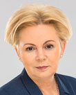
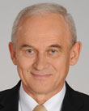
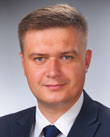
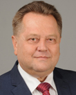

2026-09-23
Projekt wpłynął do Sejmu Druk nr 3138 ↗
w-tokuustawaIII czytanie na posiedzeniu Sejmu (2026-11-19)Sejm 10/3138
| Proces | Sejm kadencja 10, nr 3138 |
|---|---|
| Wpłynął | 2026-09-23 |
| Ostatnia zmiana źródła | 2026-11-19 |
| RCL | legislacja.rcl.gov.pl ↗ |
| Źródło | api.sejm.gov.pl ↗ |
552 zdarzeń



10. kadencja, 67. posiedzenie, 3. dzień - Sekretarz Stanu w Ministerstwie Infrastruktury Arkadiusz Marchewka 10. kadencja, 67. posiedzenie, 3. dzień (22-10-2026) 46. punkt porządku dziennego: Pierwsze czytanie rządowego projektu ustawy o zmianie ustawy o podatku dochodowym od osób prawnych oraz ustawy o portach i przystaniach morskich (druk nr 3138). Sekretarz Stanu w Ministerstwie Infrastruktury Arkadiusz Marchewka: Szanowny Panie Marszałku! Wysoka Izbo! Przedstawiam informacje dotyczące projektu ustawy o zmianie ustawy o podatku dochodowym od osób prawnych oraz ustawy o portach i przystaniach morskich. Mówiąc wprost, realizujemy działania, które pozwalają uniknąć zagrożenia koniecznością potencjalnego zwrotu niedozwolonej pomocy publicznej przez podmioty, które zarządzają portami, przy zachowaniu pozycji konkurencyjnej naszych portów. Na czym ten projekt polega? Według dzisiejszych przypisów porty są zwolnione z płacenia podatków od dochodów, które mogą być pomniejszane - chodzi o podstawę opodatkowania - o wartość inwestycji, które są realizowane. Od roku 2023 prowadzone są konkretne procedury, m.in. już wskazane przez Ministerstwo Finansów, przez Urząd Ochrony Konkurencji i Konsumenta, w związku z tym że tego typu działania mogą stanowić niedozwoloną pomoc publiczną. Jeśli chodzi o kwestie związane z tą pomocą publiczną, to najważniejsze jest to, aby zarządy portów - a mamy porty o podstawowym znaczeniu dla gospodarki narodowej, czyli Gdańsk, Gdynię oraz zespół portów Szczecin i Świnoujście - nie stanęły przed wielkim wyzwaniem związanym z tym, że pomoc publiczna czy zwolnienie z tych dochodów, które przez lata było realizowane, zostałyby potencjalnie uznane za niedozwoloną pomoc publiczną. Wtedy pojawiłaby się konieczność zwrotu tej niedozwolonej pomocy, szacujemy tę wartość na ponad 730 mln zł, co, mówiąc wprost, byłoby potencjalną katastrofą. Dlatego przygotowaliśmy rozwiązania, które pozwolą nadal stosować zwolnienie z tego podatku dochodowego i jednocześnie zachować pozycję konkurencyjną zarządów portów czy tych podmiotów, które portami administrują. Dla przykładu, jeżeli port osiąga w pewnej wysokości dochód i zrealizuje inwestycje związane z budową nowych nabrzeży, pogłębieniem toru wodnego, umocnieniem dna, budową dróg dostępowych, budową szlaków kolejowych, to o wartość tych inwestycji będzie mógł obniżyć to, co jest bazą do opodatkowania. To jest niezwykle istotne z tego punktu widzenia, że my nadajemy ramy prawne formułom, które już dzisiaj funkcjonują. (Poseł Jarosław Wałęsa: To jest oczywiste.) Dzięki temu porty unikną potencjalnego zagrożenia związanego z tym, że potencjalnie mogą zostać poproszone o zwrot pomocy publicznej. Ta sytuacja nie została rozwiązana przez ostatnie ponad 10 lat. Realizujemy działania, które pozwalają uporządkować tę sytuację. To pomniejszanie opodatkowania czy tej podstawy opodatkowania nie będzie dotyczyć tylko i wyłącznie działań stricte związanych z realizacją nabrzeży, torów wodnych, kolei, dróg itd., ale również kwestii związanych z poprawą bezpieczeństwa w portach. Więc jeżeli np. port będzie planował zakup nowych jednostek gaśniczych, a jest straż portowa, i te jednostki będą wykorzystywane do działalności związanej z funkcjonowaniem portów i przystani morskich, to również o wartość tych inwestycji będzie można tę podstawę opodatkowania obniżyć. Mówiąc wprost, to, co przez wiele lat było nieuregulowane, zostaje w sposób najlepszy z możliwych przy zachowaniu pozycji konkurencyjnej portów zachowane. Na czym to będzie polegało? Będzie to polegało na tym, że urząd morski jako jednostka weryfikująca te rozwiązania będzie - w momencie, kiedy port jej przekaże - weryfikować każdego miesiąca dane w celu rozliczenia podatku CIT i jednocześnie po całym roku ustalać, czy te działania są zgodne z zasadami udzielania czy mieszczenia się w tej dozwolonej pomocy publicznej. Sytuacja obejmuje bardzo duży, szeroki katalog działań, które mogą być potencjalnie zrealizowane w związku z
10. kadencja, 67. posiedzenie, 3. dzień - Poseł Jarosław Wałęsa 10. kadencja, 67. posiedzenie, 3. dzień (22-10-2026) 46. punkt porządku dziennego: Pierwsze czytanie rządowego projektu ustawy o zmianie ustawy o podatku dochodowym od osób prawnych oraz ustawy o portach i przystaniach morskich (druk nr 3138). Poseł Jarosław Wałęsa: Dziękuję. Panie Marszałku! Ten projekt dotyka kwestii o fundamentalnym znaczeniu dla polskiej gospodarki morskiej, dla bezpieczeństwa państwa oraz dla naszej pozycji konkurencyjnej w basenie Morza Bałtyckiego. Od 2013 r. Komisja Europejska prowadzi postępowanie w sprawie opodatkowania portów morskich w Polsce. Dotychczasowe ogólne zwolnienie podatkowe z CIT zostało zakwestionowane jako niezgodne z unijnymi zasadami pomocy publicznej. Staliśmy przed dwoma drogami, o których mówił już pan minister: po pierwsze, całkowite zniesienie zwolnienia, co uderzałoby w finanse naszych zarządów portów, albo precyzyjne dostosowanie przepisów do prawa unijnego. Rząd wybrał rozwiązanie odpowiednie i proinwestycyjne. Zamiast ryzyka konieczności zwrotu tych środków przez porty czy utraty płynności finansowej proponuje stabilne, jasne i w pełni zgodne z unijnym rozporządzeniem ramy prawne. A co konkretnie zmienia ta ustawa? Po pierwsze, chroni i rozszerza inwestycje. Projekty portowe są niezwykle kapitałochłonne i mają długi okres zwrotu. Nowelizacja utrzyma zwolnienie CIT dla wydatków na budowę, na modernizację, na przebudowę infrastruktury portowej oraz dostępowej zarówno ze strony morza, jak i ze strony lądu. Co istotne, nowela rozszerza katalog wydatków. Umożliwia finansowanie inwestycji w tzw. majątek obcy, np. ogólnodostępną infrastrukturę drogową czy kolejową wokół portów realizowaną we współpracy z samorządami. Po drugie, precyzyjnie oddziela działalność gospodarczą od niegospodarczej. Ustawowo gwarantuje pełne zwolnienie dochodów przeznaczanych na zadania publiczne, do których nie stosuje się reguły konkurencji. Mówię tutaj o kontroli i bezpieczeństwie ruchu morskiego, ochronie przeciwpożarowej od strony wody oraz obronności i ochronie portów. Podmioty zarządzające będą prowadzić wyodrębnioną ewidencję rachunkową, co zapewni transparentność. No i po trzecie, tworzy bezpieczną i przejrzystą procedurę. Odchodzimy od nieokreślonego w czasie zwolnienia na rzecz rozliczenia wydatków kwalifikowanych w danym roku podatkowym. Oceny poprawności wyliczeń dokonywać będą dyrektorzy urzędów morskich na podstawie wniosków zawierających m.in. badanie biegłego rewidenta. To daje portom pewność prawną. Decyzja dyrektora urzędu morskiego potwierdzi prawidłowość zastosowanego zwolnienia i wyeliminuje ryzyko późniejszych sporów. Warto podkreślić, że regulacja ta dotyczy zarówno naszych portów o podstawowym znaczeniu dla gospodarki morskiej, jak i mniejszych portów lokalnych i przystani. Co równie ważne, mechanizm działa na zasadzie automatyzmu rozliczeń w ciągu roku, co ogranicza biurokrację i umożliwia sprawne finansowanie bieżących projektów. Porty polskie to dziś nie tylko kluczowe węzły logistyczne handlu zagranicznego, ale także filar naszej niezależności energetycznej, obsługujący dostawy surowców oraz rozwój morskiej energetyki wiatrowej. Nie możemy pozwolić na to, żeby ten potencjał został osłabiony. Projekt ustawy łączy wymóg zgodności z prawem unijnym, co też jest bardzo ważne, z ochroną interesów polskiej gospodarki morskiej. Dlatego też Klub Parlamentarny Koalicja Obywatelska w pełni popiera proponowane rozwiązania. Dziękuję bardzo. (Oklaski) Przebieg posiedzenia
10. kadencja, 67. posiedzenie, 3. dzień - Poseł Kacper Płażyński 10. kadencja, 67. posiedzenie, 3. dzień (22-10-2026) 46. punkt porządku dziennego: Pierwsze czytanie rządowego projektu ustawy o zmianie ustawy o podatku dochodowym od osób prawnych oraz ustawy o portach i przystaniach morskich (druk nr 3138). Poseł Kacper Płażyński: Panie Marszałku! Wysoka Izbo! Panie Ministrze! Cały czas dużo nie wiemy, jeżeli chodzi o kwestię kulis prac nad tym projektem. Bo ten stan, o którym mówił pan minister w swoim wystąpieniu, trwa rzeczywiście od wielu, wielu lat. Do tej pory on nie był w proceduralny sposób kwestionowany przez Unię Europejską. Ale ja w pełni się zgadzam, że jeżeli bez szkody dla inwestycji w portach, dla kwestii finansowania projektów można przyjąć ustawę, która sprawi, że nie będzie żadnych wątpliwości co do regulacji unijnych i ich stosowania w Rzeczypospolitej w tym zakresie, to ja nie mówię: nie. Nie mówimy: nie. Natomiast cały czas, poza pewnym bardzo ogólnym stwierdzeniem, panie ministrze, że jesteście w dialogu z Komisją Europejską, my nie wiemy tak naprawdę, w jakim zakresie rozmawialiście, czego te rozmowy dotyczyły w szczegółach i czy rzeczywiście ta propozycja, która wyszła z rządu, to jest coś, co do czego w 100% możemy być przekonani i pewni, że jak wejdzie w życie w polskim prawie, to za rok, 2 lata nie okaże się, że i tak Komisja Europejska zapuka i powie: nie, to nie o to nam chodziło, porty mają zwrócić zdaniem Komisji nienależny CIT, bo ta ustawa, którą przyjęliście, zupełnie nie jest w zgodzie z prawem Unii Europejskiej. Ja bym chciał poznać większy zakres kulis rozmów, panie ministrze: z kim konkretnie ten temat przegadaliście w oficjalnym czy roboczym trybie. Chcielibyśmy mieć większą pewność, że rzeczywiście to nie jest tylko tak, że to się państwu wydaje, że tak jest, tylko że faktycznie potem nie będzie z tą ustawą żadnych kłopotów. Druga sprawa. W ocenie skutków regulacji odnośnie do tego projektu ustawy stwierdzacie państwo, że w zasadzie ustawa nie będzie miała żadnego wpływu na kwestię pozyskiwania środków na inwestycje przez porty i że to, co było, i to, co będzie, mniej więcej się wyrówna. Nieco zaskakujące jest dla mnie aż tak uspokajające podejście z państwa strony. Chciałbym usłyszeć od pana ministra nieco więcej wyjaśnień na temat tego, w jaki sposób państwo kalkulujecie to, że w pełnym zakresie zwolnienie wcześniej z CIT-u portów, przystani morskich do teraz w ograniczonym stopniu sprawi, że pieniędzy w ramach pewnego rodzaju ulgi dla portów i przystani morskich nie będzie mniej. Państwo to opisaliście w projekcie tak, jakby to nie miało mieć żadnego negatywnego impaktu, wpływu na te kwestie. Aż ciężko mi w to uwierzyć. Prosiłbym pana ministra, kiedy tu znowu wystąpi, żeby nam dokładnie te dwie kwestie opisał, wyjaśnił, przedstawił, abyśmy wiedzieli, nad czym tak naprawdę głosujemy. Dziękuję. (Oklaski) Przebieg posiedzenia
10. kadencja, 67. posiedzenie, 3. dzień - Poseł Krzysztof Lipiec 10. kadencja, 67. posiedzenie, 3. dzień (22-10-2026) 46. punkt porządku dziennego: Pierwsze czytanie rządowego projektu ustawy o zmianie ustawy o podatku dochodowym od osób prawnych oraz ustawy o portach i przystaniach morskich (druk nr 3138). Poseł Krzysztof Lipiec: Dziękuję bardzo. Panie Marszałku! Wysoka Izbo! Mam zaszczyt przedstawić w imieniu Klubu Parlamentarnego Rozwój Plus pana premiera Mateusza Morawieckiego stanowisko wobec rządowego projektu ustawy o zmianie ustawy o podatku dochodowym od osób prawnych oraz ustawy o portach i przystaniach morskich, druk sejmowy nr 3138. Wysoka Izbo! Celem projektu ustawy jest dostosowanie dotychczasowego, bezwarunkowego zwolnienia podmiotowego dla podmiotów zarządzających portami morskimi - art. 17 ust. 1 pkt 26 ustawy o CIT - do wymogów europejskiego prawa pomocy publicznej, w szczególności rozporządzenia Komisji (UE) nr 651/2014. Dotychczasowe zwolnienie miało charakter generalny i budziło poważne ryzyko uznania go przez Komisję Europejską za nielegalną pomoc publiczną niezgodną z rynkiem wewnętrznym. Omawiany projekt ustawy ma to ryzyko usunąć. Powiem wprost: z punktu widzenia systemowego kierunek jest słuszny i konieczny. Kończy erę bezwarunkowego zwolnienia i chroni polskie porty przed wszczęciem formalnego postępowania przez Brukselę, które mogłoby zakończyć się nakazem zwrotu pomocy. Dlatego co do zasady ten kierunek popieramy, ale diabeł, jak zawsze w przypadku podatków, tkwi w szczegółach. Po pierwsze, co oceniamy pozytywnie? Pozytywnie oceniamy wyłączenie ze zwolnienia dochodów z zysków kapitałowych. To jest typowa działalność komercyjna, która nie powinna korzystać z preferencji. Pozytywnie oceniamy prawidłowe rozróżnienie w nowym art. 10a ustawy portowej działalności niegospodarczej i działalności gospodarczej, co jest zgodne z orzecznictwem Trybunału Sprawiedliwości Unii Europejskiej. Nie jest pomocą publiczną: kontrola ruchu morskiego, ochrona przeciwpożarowa, ochrona portów, infrastruktura powszechnie dostępna i nieodpłatna poza terenem portu. Natomiast budowa nabrzeży, modernizacja, pogłębianie portów jest już działalnością gospodarczą i musi podlegać reżimowi rozporządzenia Komisji (UE) z limitem do wysokości luki finansowej. To jest kluczowe dla bezpieczeństwa prawnego naszych portów. Pozytywnie oceniamy też wprowadzenie mechanizmu sankcyjnego utraty prawa do zwolnienia w razie decyzji dyrektora urzędu morskiego o zwrocie pomocy. Po drugie, czego dotyczą nasze najpoważniejsze zastrzeżenia? I tu, Wysoka Izbo, jest sedno problemu - art. 10a ust. 6-19. Powołuje się dyrektora urzędu morskiego jako organ właściwy do udzielania i weryfikacji pomocy publicznej. Panie marszałku, dyrektorzy urzędów morskich w Szczecinie i w Gdyni to świetni fachowcy od spraw morskich, ale oni nigdy nie pełnili funkcji organu pomocy publicznej. Nie mają kadr, doświadczenia w stosowaniu rozporządzenia Komisji, metody ekwiwalentu dotacji brutto i stopy referencyjnej. Powierzenie im tej roli bez wzmocnienia kadrowego i finansowego grozi po prostu paraliżem decyzyjnym dla portów w Gdańsku, Szczecinie, Świnoujściu i Gdyni. Do tego dochodzi obowiązkowe sprawozdanie biegłego rewidenta. To jest dodatkowy koszt szacunkowy rzędu 50-80 tys. zł rocznie dla każdego podmiotu zarządzającego. Brakuje precyzji. Projekt ustawy odsyła do K.p.a., ale nie jest sprecyzowane, kto jest organem drugiej instancji w przypadku odwołania od decyzji dyrektora urzędu morskiego. Minister do spraw gospodarki morskiej? To wymaga doprecyzowania, podobnie jak delegacja ustawowa w art. 10a ust. 20. Brak jednolitego wzoru i wniosku spowoduje chaos. Po trzecie, i to jest zastrzeżenie najpoważniejsze, kwestia przepisu przejściowego. Art. 3 ust. 3 projektu stanowi, że warunkiem skorzystania z nowej pomocy jest rozpoczęcie prac po wejściu w życie ustawy, a zgodnie z rozporządzeniem Komisji (UE) rozpoczęcie prac to pierwsze prawnie wiążące zobowiązanie. Co to
10. kadencja, 67. posiedzenie, 3. dzień - Poseł Dariusz Wieczorek 10. kadencja, 67. posiedzenie, 3. dzień (22-10-2026) 46. punkt porządku dziennego: Pierwsze czytanie rządowego projektu ustawy o zmianie ustawy o podatku dochodowym od osób prawnych oraz ustawy o portach i przystaniach morskich (druk nr 3138). Poseł Dariusz Wieczorek: Pani Marszałek! Panie Ministrze! Wysoka Izbo! Mój poprzednik przedłużył o minutę, to ja skrócę w takim razie, żeby było elegancko. (Poseł Krzysztof Lipiec: Zapraszam.) Mam przyjemność w imieniu klubu Lewicy przedstawić stanowisko w sprawie ustawy o zmianie ustawy o podatku dochodowym od osób prawnych oraz ustawy o portach i przystaniach morskich. Zwracam uwagę na jedną rzecz. Mianowicie mamy w tej chwili projekt ustawy, który dotyczy dostosowania polskiego prawa do prawa unijnego. Ta sprawa toczy się od 2013 r. i to jest rzeczywiście końcówka poprzedniej koalicji, ale przez 8 lat rządów koalicji Prawa i Sprawiedliwości w tej sprawie nie zrobiono nic. W związku z czym dzisiaj zwracamy uwagę na rzecz następującą. Jesteśmy od 2004 r. w Unii Europejskiej. Od 2004 r. do Polski wpłynęło 250 mld euro środków pomocowych. Środków, które również były wydatkowane, jeżeli chodzi o polskie porty morskie, o te 15 podmiotów, które działają i funkcjonują. Netto - bo będzie oczywiście od razu zarzut, że przecież wpłacaliśmy składkę - to jest 175 mld euro, które zainwestowaliśmy od 2004 r. w infrastrukturę, również w infrastrukturę portową. I nie ma się co dziwić, że Unia Europejska mówi: okej, portom trzeba pomagać, ale musi to być zgodnie z zasadami, które w Unii Europejskiej funkcjonują, i wszystkie porty w Unii Europejskiej muszą tych samych zasad przestrzegać. Dlatego dobrze się stało, że mamy ten projekt ustawy, bo on rozwiązuje kwestię tych niebezpieczeństw, o których tutaj mówiliśmy: że ta procedura ostatecznie będzie wdrożona i - zakładając, że rzeczywiście to zostanie udowodnione - część pomocy publicznej, która była w tych latach przeznaczana na rzecz polskich portów, trzeba będzie niestety oddawać. W ustawie precyzyjnie wpisujemy rzeczy, które są niezbędne, żeby taka pomoc była uzyskana. To jest akurat bardzo dobre rozwiązanie, bo to są kwestie dotyczące wydatków stricte na infrastrukturę portową, wydatków w zakresie kontroli i bezpieczeństwa ruchu morskiego, kwestia infrastruktury zlokalizowanej na terenie portu, która jest powszechnie dostępna nieodpłatnie dla użytkowników na równych warunkach, kwestie ochrony przeciwpożarowej, kwestie związane z ochroną portów, budowa, wymiana i modernizacja infrastruktury portowej, pogłębianie. To są rzeczy, które będą podlegały tej pomocy publicznej, czyli zyski portów, które są przeznaczane na inwestycje w rozwój portów w tym obszarze, nie będą opodatkowane. To jest zgodne z interesem polskiego państwa i pewnie z interesem wszystkich państw Unii Europejskiej, bo wiemy doskonale, jak ważny dla rozwoju gospodarki każdego kraju położonego nad morzem jest rozwój portów. Ta ustawa rozwiązuje kwestię potencjalnych niebezpieczeństw, które mogą zaistnieć, jeżeli chodzi o prowadzenie procedury kontrolnej przez Komisję Europejską. Dlatego klub Lewicy rekomenduje dalsze procedowanie nad projektem ustawy i będzie ten projekt ustawy wspierał. Dziękuję bardzo. (Oklaski) Przebieg posiedzenia
10. kadencja, 67. posiedzenie, 3. dzień - Poseł Norbert Pietrykowski 10. kadencja, 67. posiedzenie, 3. dzień (22-10-2026) 46. punkt porządku dziennego: Pierwsze czytanie rządowego projektu ustawy o zmianie ustawy o podatku dochodowym od osób prawnych oraz ustawy o portach i przystaniach morskich (druk nr 3138). Poseł Norbert Pietrykowski: Pani Marszałek! Państwo Ministrowie! Wysoki Sejmie! Idąc za dobrym przykładem pana posła Dariusza Wieczorka, również pozwolę sobie skrócić o minuteczkę. (Poseł Tomasz Zimoch: A nie dwie?) Dwie? Dobrze. (Oklaski) (Poseł Dariusz Wieczorek: Brawo!) Wicemarszałek Dorota Niedziela: Będziemy wdzięczni, panie pośle. Poseł Norbert Pietrykowski: Przyjęcie tej ustawy jest konieczne, przede wszystkim ze względu na wymogi prawa Unii Europejskiej dotyczące pomocy publicznej. A główne powody i cele wdrożenia nowych przepisów obejmują: Zakończenie dochodzenia Komisji Europejskiej. Od 2013 r. Bruksela prowadzi postępowanie wyjaśniające w sprawie zasad opodatkowania podmiotów zarządzających portami w Polsce. Dotychczasowe zbyt ogólne zwolnienie z podatku CIT zostało uznane za niezgodną z unijnym rynkiem pomoc publiczną. Brak zmian groziłby karami finansowymi dla państwa lub koniecznością zwrotu środków przez porty. Konieczność uszczelnienia i powiązania ulg z inwestycjami. Dotychczasowe przepisy zwalniały z CIT dochody zarządów portów, pod warunkiem że zostały one przeznaczone na budowę lub utrzymanie infrastruktury. Nowe prawo ściśle powiązuje korzyść podatkową z faktycznie poniesionymi wydatkami w danym roku na konkretne cele, np. budowę, modernizację czy pogłębianie torów wodnych. Rozdzielenie działalności gospodarczej od niegospodarczej. Unijne przepisy wymagają transparentności. Nowe prawo wymusza na zarządach portów prowadzenie odrębnej ewidencji kosztów i przychodów. Dzięki temu środki ze zwolnień podatkowych nie będą mogły krosować i finansować komercyjnej działalności rynkowej portów, co zakłóciłoby uczciwą konkurencję Unii Europejskiej. Wprowadzenie mechanizmów kontroli i audytu. Ustawa nakłada obowiązek weryfikacji wydatków przez biegłego rewidenta. Klub Parlamentarny Centrum w pełni popiera rządowy projekt ustawy o zmianie ustawy o podatku dochodowym od osób prawnych oraz ustawy o portach i przystaniach morskich. Dziękuję bardzo. (Oklaski) (Głos z sali: Brawo!) (Poseł Kacper Płażyński: Centrum głosuje przeciwko.) Przebieg posiedzenia
10. kadencja, 67. posiedzenie, 3. dzień - Poseł Krzysztof Szymański 10. kadencja, 67. posiedzenie, 3. dzień (22-10-2026) 46. punkt porządku dziennego: Pierwsze czytanie rządowego projektu ustawy o zmianie ustawy o podatku dochodowym od osób prawnych oraz ustawy o portach i przystaniach morskich (druk nr 3138). Poseł Krzysztof Szymański: Szanowna Pani Marszałek! Panie Ministrze! Wysoka Izbo! Polskie porty morskie są jednym z fundamentów naszej gospodarki, bo to właśnie przez nie przechodzi znaczna część polskiego handlu zagranicznego. To one zapewniają nam dostęp do światowych rynków, bezpieczeństwo dostaw surowców energetycznych, a w sytuacji zagrożenia również zdolności logistyczne niezbędne dla obronności państwa. I dlatego rozwój portów w Gdyni, Gdańsku, Szczecinie, Świnoujściu, ale również naszych mniejszych portów regionalnych, musi być traktowany jako strategiczny interes Rzeczypospolitej. Od wielu lat państwo polskie wspiera ten rozwój poprzez zwolnienie zarządów portów z podatku CIT w części przeznaczonej na inwestycje. I jest to rozwiązanie pozytywne. Pozwala pozostawić wypracowane środki w portach, zamiast odprowadzać je do budżetu państwa, a następnie ponownie ubiegać się o ich przyznanie na inwestycje. Niestety ten mechanizm został zakwestionowany przez Komisję Europejską, która uznała, że może on stanowić niedozwoloną pomoc publiczną. I tutaj, Wysoka Izbo, trzeba powiedzieć o sprawie zasadniczej. W Konfederacji stoimy na stanowisku, że to państwo polskie powinno mieć możliwie szeroką swobodę kształtowania własnej polityki gospodarczej i podatkowej. Nie zgadzamy się z kierunkiem integracji, w którym instytucje unijne uzyskują coraz większy wpływ na decyzje gospodarcze podejmowane przez suwerenne państwa. Polskie porty konkurują z portami niemieckimi, holenderskimi czy belgijskimi. I każde z tych państw prowadzi własną politykę wspierania strategicznej infrastruktury. Dlatego uważamy, że Polska powinna mieć prawo do stosowania skutecznych instrumentów podatkowych, które wzmacniają konkurencyjność naszych portów. Nie możemy dopuścić do sytuacji, w której reguły unijne będą ograniczały nasze możliwości rozwoju gospodarczego. Komisja Europejska kwestionuje obecne zwolnienie od 2013 r. Stąd istnieje zagrożenie, że w przypadku utrzymywania tego stanu prawnego polskie porty zostaną zobowiązane do zwrotu korzyści podatkowych uzyskanych nawet od 2007 r. I projekt zachowuje zwolnienie z CIT, dostosowując jego zasady do unijnych regulacji dotyczących pomocy publicznej. I co więcej, rozszerza katalog wydatków kwalifikowanych o inwestycje w infrastrukturę zapewniającą dostęp do portów od strony morza i lądu. I to rozwiązanie zasługuje na uwagę, ponieważ właśnie infrastruktura dostępowa jest jednym z najważniejszych ograniczeń rozwojowych polskich portów. Mamy jednak kilka istotnych zastrzeżeń. Po pierwsze, finansowanie inwestycji wieloletnich. Dotychczas zarządy portów mogły gromadzić dochody z przeznaczeniem na przyszłe inwestycje bez ograniczenia terminu ich wydatkowania. Natomiast nowe przepisy wiążą zwolnienie podatkowe z wydatkami faktycznie poniesionymi w danym roku podatkowym. Tymczasem inwestycje portowe kosztują setki milionów, a niekiedy miliardy złotych. Ich przygotowanie i realizacja trwają wiele lat. Dlatego pytamy pana ministra, czy nowe rozwiązania nie ograniczą zdolności zarządów portów do akumulowania kapitału na duże inwestycje strategiczne. I po drugie, biurokracja. Projekt przewiduje dodatkowe obowiązki sprawozdawcze, weryfikację wydatków przez biegłego rewidenta oraz coroczne postępowanie przed dyrektorem urzędu morskiego. Chcemy mieć pewność, że nie stworzymy kolejnego rozbudowanego mechanizmu administracyjnego, który będzie generował koszty, i to szczególnie dla mniejszych portów. Po trzecie, rzeczywiste skutki finansowe. Rząd zakłada, że nowe przepisy będą neutralne dla finansów publicznych i nie ograniczą istotnie dotychczasowych korzyści podatkowych. Ale czy ministerstwo przeprowadziło szcz
10. kadencja, 67. posiedzenie, 3. dzień - Poseł Jarosław Sachajko 10. kadencja, 67. posiedzenie, 3. dzień (22-10-2026) 46. punkt porządku dziennego: Pierwsze czytanie rządowego projektu ustawy o zmianie ustawy o podatku dochodowym od osób prawnych oraz ustawy o portach i przystaniach morskich (druk nr 3138). Poseł Jarosław Sachajko: Szanowna Pani Marszałek! Wysoka Izbo! Panie Ministrze! Polskie porty morskie to strategiczny element naszej gospodarki, bezpieczeństwa i niezależności państwa. Dlatego popieram kierunek tej ustawy, która pozwala zachować zwolnienia podatkowe dla zarządów portów i ograniczyć ryzyko konieczności zwrotu pomocy publicznej. W ciągu ostatnich 10 lat największe polskie porty skorzystały ze zwolnień podatkowych o wartości prawie 600 mln zł. Jednocześnie zainwestowaliśmy ze środków własnych ponad 3700 mln zł. To pokazuje, że pozostawienie pieniędzy na rozwój przedsiębiorstw przynosi gospodarce wymierne korzyści. Ale jest poważny problem. Komisja Europejska od 2013 r. kwestionuje polskie zwolnienia podatkowe, a teraz musimy zmieniać przepisy, żeby chronić nasze porty przed obowiązkiem zwrotu pomocy. Czy naprawdę rozwój strategicznej infrastruktury państwa musi przez tyle lat pozostawać w niepewności prawnej? Co więcej, dotychczas porty mogły gromadzić dochody zwolnione z podatku na przyszłe inwestycje. Teraz zwolnienie będzie powiązane z wydatkami poniesionymi w konkretnym roku podatkowym. Panie Ministrze! Przecież wielkiego terminalu czy nabrzeża nie buduje się w rok. Najpierw trzeba zgromadzić kapitał, przygotować dokumentację, uzyskać pozwolenie, a dopiero potem realizować inwestycje. Nie możemy doprowadzić do sytuacji, w której port zapłaci podatek od pieniędzy odkładanych na rozwój tylko dlatego, że jeszcze nie zdążył ich wydać. I jeszcze jedno. Czy Komisja Europejska zagwarantuje, że po zmianie przepisów nie zażąda zwrotu ulg wykorzystanych w poprzednich latach? Popieram utrzymanie zwolnień podatkowych, ale zadbajmy, żeby nowe przepisy rzeczywiście wspierały rozwój polskich portów, a nie ograniczały możliwości finansowe wieloletnich inwestycji. Silne polskie porty to silna polska gospodarka. Dziękuję. (Oklaski) Przebieg posiedzenia
10. kadencja, 67. posiedzenie, 3. dzień - Poseł Marcin Józefaciuk 10. kadencja, 67. posiedzenie, 3. dzień (22-10-2026) 46. punkt porządku dziennego: Pierwsze czytanie rządowego projektu ustawy o zmianie ustawy o podatku dochodowym od osób prawnych oraz ustawy o portach i przystaniach morskich (druk nr 3138). Poseł Marcin Józefaciuk: Serdecznie dziękuję. Szanowna Pani Marszałek! Wysoka Izbo! Swoje stanowisko złożyłem na piśmie. Mam jednak kilka pytań. Jakie symulacje potwierdzają neutralność nowych zasad dla małych portów, które odkładają dochody na większą inwestycję również wtedy, gdy przetarg, roboty lub płatność przesuną się na kolejny rok? Według jakich kryteriów etap wieloletniej inwestycji realizowany po wejściu ustawy w życie zostanie uznany za odrębny projekt uprawniony do pomocy, skoro projekt wymaga rozpoczęcia prac po tej dacie? Jak rząd zapewni zgodność zwolnienia ze zmiennymi unijnymi regułami pomocy publicznej od 1 stycznia 2027 r., skoro na ten sam dzień Komisja Europejska planuje wejście w życie nowego rozporządzenia? Dziękuję. (Oklaski) Przebieg posiedzenia
10. kadencja, 67. posiedzenie, 3. dzień - Poseł Jarosław Sachajko 10. kadencja, 67. posiedzenie, 3. dzień (22-10-2026) 46. punkt porządku dziennego: Pierwsze czytanie rządowego projektu ustawy o zmianie ustawy o podatku dochodowym od osób prawnych oraz ustawy o portach i przystaniach morskich (druk nr 3138). Poseł Jarosław Sachajko: Panie Marszałku! Wysoka Izbo! Popieram utrzymanie ulg podatkowych dla polskich portów, ale projekt przewiduje kontrolę wydatków dopiero po skorzystaniu ze zwolnienia. A jeżeli urząd zakwestionuje inwestycje, port może być zmuszony do zwrotu pomocy wraz z odsetkami. Panie Ministrze! Dlaczego nie zapewnicie portom możliwości uzyskania wiążącej oceny inwestycji przed wydaniem setek milionów złotych? Dziękuję. (Oklaski) Przebieg posiedzenia
10. kadencja, 67. posiedzenie, 3. dzień - Poseł Jarosław Wałęsa 10. kadencja, 67. posiedzenie, 3. dzień (22-10-2026) 46. punkt porządku dziennego: Pierwsze czytanie rządowego projektu ustawy o zmianie ustawy o podatku dochodowym od osób prawnych oraz ustawy o portach i przystaniach morskich (druk nr 3138). Poseł Jarosław Wałęsa: Dziękuję. Pani Marszałek! Panie Ministrze! W swoim wystąpieniu skoncentrował się pan tylko na tych największych strategicznych portach, ale chyba warto podkreślić, że ta ustawa dotyczy wszystkich portów i zwolnień dla wszystkich portów. Powinniśmy się z tego cieszyć. To jest jedna kwestia. Druga kwestia dotyczy tego, że tak naprawdę ta nowelizacja ma zakończyć konflikt z Komisją Europejską, który toczy się już od kilkunastu lat. Więc jaką mamy gwarancję, że przepisy, które zostaną dzisiaj wprowadzone, które są dzisiaj proponowane, zakończą ten konflikt raz na zawsze i Komisja Europejska przyjmie te rozwiązania jako zgodne z prawem europejskim? Dziękuję bardzo. (Oklaski) Przebieg posiedzenia
10. kadencja, 67. posiedzenie, 3. dzień - Poseł Norbert Pietrykowski 10. kadencja, 67. posiedzenie, 3. dzień (22-10-2026) 46. punkt porządku dziennego: Pierwsze czytanie rządowego projektu ustawy o zmianie ustawy o podatku dochodowym od osób prawnych oraz ustawy o portach i przystaniach morskich (druk nr 3138). Poseł Norbert Pietrykowski: Pani Marszałek! Państwo Ministrowie! Wysoki Sejmie! Jedyne, co mnie martwi w tym projekcie, to jest wprowadzenie rygorystycznych wymogów sprawozdawczych, konieczności zatwierdzenia rozliczeń przez dyrektorów urzędów morskich oraz audytów biegłych rewidentów, która nakłada na zarządy portów znaczne, niestety większe obowiązki administracyjne, co niestety trochę zwiększy koszty obsługi prawnej. Ale cóż, coś za coś, jak to zazwyczaj bywa. Dziękuję bardzo. (Oklaski) Przebieg posiedzenia
10. kadencja, 67. posiedzenie, 3. dzień - Poseł Grzegorz Lorek 10. kadencja, 67. posiedzenie, 3. dzień (22-10-2026) 46. punkt porządku dziennego: Pierwsze czytanie rządowego projektu ustawy o zmianie ustawy o podatku dochodowym od osób prawnych oraz ustawy o portach i przystaniach morskich (druk nr 3138). Poseł Grzegorz Lorek: Szanowna Pani Marszałek! Panie Ministrze! Wysoka Izbo! Panie ministrze, czy wszystkie porty w kraju, mówię o portach bałtyckich, są traktowane równo? Taki przykład. Ile pieniędzy przeznaczycie w nadchodzącym budżecie na port w Kołobrzegu? Dziękuję. (Oklaski) Przebieg posiedzenia
10. kadencja, 67. posiedzenie, 3. dzień - Poseł Kacper Płażyński 10. kadencja, 67. posiedzenie, 3. dzień (22-10-2026) 46. punkt porządku dziennego: Pierwsze czytanie rządowego projektu ustawy o zmianie ustawy o podatku dochodowym od osób prawnych oraz ustawy o portach i przystaniach morskich (druk nr 3138). Poseł Kacper Płażyński: Pani Marszałek! Wysoka Izbo! Panie Ministrze! Ja z przypomnieniem, panie ministrze, żeby jak pan tu wyjdzie, to odpowiedział na pytania z wystąpienia klubowego. Czyli czy daje pan słowo honoru, że ani złotówka mniej nie trafi do polskich portów i przystani po wprowadzeniu tej ustawy? I czy zapewnia nas pan, że nie będzie sytuacji, że za rok, za dwa zapuka do nas Komisja Europejska i powie: nie, my się z wami na taką ustawę wcale nie umawialiśmy. To nieprawda. Macie zwracać CIT od portów i przystani morskich. Chcemy pana słowa honoru, że tak właśnie będzie. Dziękuję. (Oklaski) Przebieg posiedzenia
10. kadencja, 67. posiedzenie, 3. dzień - Poseł Janusz Kowalski 10. kadencja, 67. posiedzenie, 3. dzień (22-10-2026) 46. punkt porządku dziennego: Pierwsze czytanie rządowego projektu ustawy o zmianie ustawy o podatku dochodowym od osób prawnych oraz ustawy o portach i przystaniach morskich (druk nr 3138). Poseł Janusz Kowalski: Szanowna Pani Marszałek! Ja z tej mównicy najczęściej krytykuję Koalicję Obywatelską i rząd Donalda Tuska, ale chcę powiedzieć coś dobrego akurat o panu ministrze Marchewce, który rzeczywiście stara się zaproponować dobre rozwiązania dla, można powiedzieć, wzmocnienia wykorzystania przez Rzeczpospolitą swojej renty geograficznej, czyli dostępu do morza. Te rozwiązania zasługują na poparcie. Oczywiście chciałbym, żeby były jeszcze bardziej ofensywne. Przed chwileczką pan poseł Krzysztof Szymański z Konfederacji mówił o tym, że to, co powinno Polaków łączyć, a szczególnie polskich polityków, którzy podejmują decyzje strategiczne, to duże inwestycje. I taką inwestycją jest pomysł pana posła Kacpra Płażyńskiego, budowa portu Haller w Lubiatowie, portu podwójnego przeznaczenia, czyli i cywilnego, i wojskowego. Zachęcam szanownego pana ministra do pochylenia się nad tą koncepcją, bo taka koncepcja powinna łączyć i opozycję, i rząd. W tej sprawie nie powinno być sporu politycznego. Tak dla portu Haller. (Oklaski) Przebieg posiedzenia
10. kadencja, 67. posiedzenie, 3. dzień - Poseł Małgorzata Pępek 10. kadencja, 67. posiedzenie, 3. dzień (22-10-2026) 46. punkt porządku dziennego: Pierwsze czytanie rządowego projektu ustawy o zmianie ustawy o podatku dochodowym od osób prawnych oraz ustawy o portach i przystaniach morskich (druk nr 3138). Poseł Małgorzata Pępek: Pani Marszałek! Wysoka Izbo! Panie Ministrze! Polskie porty to nie tylko miejsca przeładunku towarów, to ważne ogniwa naszego handlu zagranicznego, infrastruktury logistycznej i bezpieczeństwa państwa. A ich rozwój przekłada się na możliwości polskich przedsiębiorstw, atrakcyjność inwestycyjną kraju i naszą pozycję na Bałtyku. Dlatego zdecydowanie należy poprzeć kierunek zaproponowany w niniejszym projekcie ustawy. Nie polega on na bezwarunkowym utrzymaniu dotychczasowej preferencji podatkowej, ale wprowadza mechanizm, który wiąże zwolnienie z określonymi wydatkami i zasadami pomocy publicznej. Niemniej jednak proszę o odpowiedź na pytanie: Dlaczego w art. 10a projektu wydłużono okres przedawnienia należności z tytułu nienależnej pomocy oraz obowiązek przechowywania ksiąg do 10 lat, skoro standardowe przepisy Ordynacji podatkowej i ustawy o rachunkowości (Dzwonek) dla celów CIT wymagają archiwizacji dokumentacji przez okres 5 lat? Proszę o informację, jaki jest powód. Dziękuję. (Oklaski) Przebieg posiedzenia
10. kadencja, 67. posiedzenie, 3. dzień - Sekretarz Stanu w Ministerstwie Infrastruktury Arkadiusz Marchewka 10. kadencja, 67. posiedzenie, 3. dzień (22-10-2026) 46. punkt porządku dziennego: Pierwsze czytanie rządowego projektu ustawy o zmianie ustawy o podatku dochodowym od osób prawnych oraz ustawy o portach i przystaniach morskich (druk nr 3138). Sekretarz Stanu w Ministerstwie Infrastruktury Arkadiusz Marchewka: Dziękuję. Szanowna Pani Marszałek! Szanowni Państwo Posłowie! Dziękuję za zadane pytania. Odpowiem na nie po kolei. Pan poseł Sachajko pytał o to, dlaczego kontrola przeznaczenia tych środków finansowych będzie się odbywać po roku, a nie w trakcie realizacji tych inwestycji. Panie pośle, to wynika, mówiąc wprost, z konieczności przekazywania każdego miesiąca zaliczek na podatek dochodowy. Spółki, jakimi są zarządy portów, każdego miesiąca przekazują je urzędom skarbowym. To by sprawiało, że tego typu kontrola musiałaby odbywać się każdego miesiąca, byłaby dość uciążliwa i praktycznie permanentna. Dlatego postanowiliśmy, że po całym roku przedstawiania informacji i płaceniu zaliczek na podatek dochodowy urząd morski będzie to weryfikował, ale tylko od strony formalnej, dlatego że każdego roku spółka i tak musi realizować sprawozdanie biegłego rewidenta, zatwierdzając swój wynik finansowy, więc sprawozdanie biegłego rewidenta i tak byłoby przekazywane. Stąd decyzja o przedstawianiu szczegółowych informacji po kontroli dotyczącej całego roku. Księgowi w portach i władze finansowe doskonale zdają sobie sprawę, jakie wartości, które są uwzględnione również w zaliczkach na podatek dochodowy, wpisują tam każdego miesiąca. Pan poseł Wałęsa pytał o kwestię zgodności z prawem unijnym. Jak to będzie odpowiadało na potrzeby i wyzwania, które przed nami stoją? Ten projekt został skonsultowany również z Ministerstwem Spraw Zagranicznych. Jest on zgodny z prawem Unii Europejskiej. Mamy na to odpowiednie dokumenty. Jednocześnie za pośrednictwem Urzędu Ochrony Konkurencji i Konsumentów Ministerstwo Infrastruktury na bieżąco prowadzi ten dialog i te zapisy są uznawane za wystarczające. Pan poseł Pietrykowski również pytał o kwestie związane z biegłym rewidentem. Już państwu odpowiedziałem, że i tak każdego roku, zatwierdzając swój wynik finansowy, spółka realizuje tego typu dokumentacje. Pan poseł Płażyński pytał, czy daję słowo honoru. Tak, panie pośle, dlatego że do tej pory zwolnione z tego podatku... Inwestycje, które były brane pod uwagę, pozwalały na obniżenie podstawy opodatkowania, były dokładnie tym samym zestawem i tym samym katalogiem działań, które zaproponowaliśmy obecnie. Mogę przytoczyć, że w ostatnich 4 latach dochód, który był zwolniony, sięgał od 98% do 99% - w ramach tego samego katalogu inwestycji. Zostawiamy dokładnie ten sam katalog inwestycji. Zapytał pan, czy będą te same środki finansowe. Oczywiście to zależy od wartości tych inwestycji, ale jeżeli one zostaną na tym samym poziomie, to będzie to dokładnie to samo, co było do tej pory i co do tej pory miało miejsce. Te kwoty zależą od wartości tych inwestycji, a jak wszyscy państwo wiedzą, realizujemy różne inwestycje, które mówiąc wprost, różnie rozkładają się w latach. Pan poseł Kowalski... (Poseł Kacper Płażyński: Jeszcze Komisja Europejska.) Odpowiadałem już wcześniej na to pytanie, które zadał również pan poseł Wałęsa. Za pośrednictwem Urzędu Ochrony Konkurencji i Konsumentów, który jest jednostką wiodącą w zakresie konsultacji pomiędzy ministerstwem, czyli rządem, a Komisją Europejską, prowadzimy... Te zapisy są na bieżąco konsultowane i uznawane za wystarczające do realizacji tego przedsięwzięcia, nad którym pracujemy. Panu posłowi Kowalskiemu dziękuję za wyrazy uznania w tym zakresie. Zgadzam się, że sprawy związane z inwestycjami morskimi łączą nas wszystkich, nie ma co do tego wątpliwości. Pani posłanka Pępek pytała o przepisy związane z długością czasu archiwizacji tych dokumentów. To są przepisy związane stricte z pomocą publiczną.
10. kadencja, 67. posiedzenie, 3. dzień - Poseł Łukasz Mejza 10. kadencja, 67. posiedzenie, 3. dzień (22-10-2026) 46. punkt porządku dziennego: Pierwsze czytanie rządowego projektu ustawy o zmianie ustawy o podatku dochodowym od osób prawnych oraz ustawy o portach i przystaniach morskich (druk nr 3138). Poseł Łukasz Mejza: Szanowny Panie Marszałku! Wysoka Izbo! Kochana Polsko! Panie Tusk! Pan posłucha, bo to nie gra w warcaby ze Szłapką, tylko najważniejsze sprawy dla Polski. Pytam, ile jeszcze upokorzeń ze strony Ukraińców, abyście w końcu się obudzili. Ustanowienie roku 2027 r. rokiem UPA. Czy wam w tym rządzie sufit spadł na głowę? Polacy to naród bohaterów i każdy ma nas szanować. Ukraińcy na nas plują, a wy udajecie, że deszcz pada. Nadal wysyłacie im pieniądze i broń. Zero przelewów na Ukrainę, całkowite zamknięcie granicy, zablokowanie lotniska w Jasionce, zablokowanie wejścia do Unii Europejskiej - to powinna być reakcja polskiego rządu. Ale wy jesteście politycznymi eunuchami, radośnie skaczącymi do ukraińskiej muzyki. (Oklaski) (Poseł Dorota Niedziela: Ruski agent.) (Głos z sali: Brawo!) Przebieg posiedzenia
10. kadencja, 67. posiedzenie, 3. dzień - Poseł Jarosław Sachajko 10. kadencja, 67. posiedzenie, 3. dzień (22-10-2026) 46. punkt porządku dziennego: Pierwsze czytanie rządowego projektu ustawy o zmianie ustawy o podatku dochodowym od osób prawnych oraz ustawy o portach i przystaniach morskich (druk nr 3138). Poseł Jarosław Sachajko: Panie Marszałku! Nieobecny Panie Premierze! Nawet wasza ˝Gazeta Wyborcza˝ opisuje szokujące zarzuty dotyczące zakupów broni. Informator ˝Gazety Wyborczej˝ ze zbrojeniówki twierdzi: za wszystkie zakupy dotyczące zbrojeniówki przepłacamy dwukrotnie, bo jest SAFE. Tańsze oferty są odrzucane, a politycy szukają posad w zagranicznych koncernach. To są zarzuty dotyczące gigantycznego marnotrawstwa i korupcji. Panie premierze, proszę wyjść na mównicę i wytłumaczyć Polakom, kto kontroluje ceny uzbrojenia, dlaczego tańsze oferty są odrzucane, gdzie jest CBA. Chyba że wy ponownie czekacie na Prokuraturę Europejską, tak jak było w sprawie waszego posła Króla. Panie premierze, czy miliardy z SAFE mają służyć obronie Polski, czy zagranicznym koncernom i posadom dla polityków Platformy Obywatelskiej i PSL? (Oklaski) Przebieg posiedzenia
10. kadencja, 67. posiedzenie, 3. dzień - Poseł Włodzimierz Skalik 10. kadencja, 67. posiedzenie, 3. dzień (22-10-2026) 46. punkt porządku dziennego: Pierwsze czytanie rządowego projektu ustawy o zmianie ustawy o podatku dochodowym od osób prawnych oraz ustawy o portach i przystaniach morskich (druk nr 3138). Poseł Włodzimierz Skalik: Szanowny Panie Marszałku! Wysoka Izbo! Pod patronatem państwa polskiego, premiera Tuska i ministra Domańskiego funkcjonuje i rozwija się w Polsce nowoczesny system niewolnictwa obejmujący dziesiątki tysięcy franczyzobiorców. Niewolnicy tego systemu zwodzeni są perspektywą korzystnej współpracy biznesowej. Z powodu rażąco asymetrycznych umów wpadają w spiralę długów sięgających setek tysięcy złotych wskutek brutalnego wykorzystywania przewagi ekonomicznej franczyzodawcy. Pracują po 17 godzin na dobę, zmagają się z depresją i rozpadem rodzin. Co rusz słyszymy o kolejnych przypadkach targnięcia się na życie kolejnych franczyzobiorców. Minister Arkadiusz Myrcha rozpoczyna prace analityczne. Panie ministrze, proszę nie pozorować prac. Prace analityczne zostały wykonane. Prace legislacyjne powinny ruszyć. (Dzwonek) Oto... (Wicemarszałek wyłącza mikrofon, poseł przemawia przy wyłączonym mikrofonie, oklaski) Przebieg posiedzenia
10. kadencja, 67. posiedzenie, 3. dzień - Poseł Paulina Matysiak 10. kadencja, 67. posiedzenie, 3. dzień (22-10-2026) 46. punkt porządku dziennego: Pierwsze czytanie rządowego projektu ustawy o zmianie ustawy o podatku dochodowym od osób prawnych oraz ustawy o portach i przystaniach morskich (druk nr 3138). Poseł Paulina Matysiak: Panie Marszałku! Wysoka Izbo! Drodzy Państwo! Dzisiaj rozpoczyna się operacja samorządowej rekonkwisty. I to wszystko za sprawą PSL-u, ponieważ przez Sejm PSL przepycha projekt o cofnięciu reformy, którą wprowadziło Prawo i Sprawiedliwość. I chce tym projektem zlikwidować limit dwukadencyjności w samorządach. (Poseł Krzysztof Paszyk: O, jaka szkoda.) I ta średniowieczna terminologia nie jest użyta przeze mnie przez przypadek, ponieważ chodzi o to, żeby królestwo wciąż mogło się dzielić na coraz mniejsze księstwa, które są zarządzane przez władcę po dwie, trzy kadencje bez przerwy, a także podlegające dziedziczeniu, może nie po liniach rodzinnych, ale przynajmniej po tych rodzinach partyjnych. Podam państwu przykład, jak to wygląda w praktyce. Np. w takim Aleksandrowie Łódzkim, gdzie rządzi burmistrz Platformy Obywatelskiej pan Jacek Lipiński, urzędujący burmistrz zostaje honorowym obywatelem miasta, a tytuł ten został mu nadany przez radnych z własnego komitetu. Ponoć pan burmistrz był zaskoczony, ale drodzy państwo, zdania są podzielone. (Dzwonek) Składam wniosek o przeliczenie kworum, żebyśmy wiedzieli, ile jest osób na tej sali... (Wicemarszałek wyłącza mikrofon, poseł przemawia przy wyłączonym mikrofonie, oklaski) Przebieg posiedzenia
10. kadencja, 67. posiedzenie, 3. dzień - Poseł Jerzy Meysztowicz 10. kadencja, 67. posiedzenie, 3. dzień (22-10-2026) 46. punkt porządku dziennego: Pierwsze czytanie rządowego projektu ustawy o zmianie ustawy o podatku dochodowym od osób prawnych oraz ustawy o portach i przystaniach morskich (druk nr 3138). Poseł Jerzy Meysztowicz: Panie Marszałku! Wysoka Izbo! Muszę z przykrością stwierdzić, że nasz prezydent jest uzurpatorem. Uzurpuje sobie prawo, którego nie miał, nie ma i nie będzie miał, do kwestionowania wyboru sędziów Trybunału Konstytucyjnego przez Sejm. Załóżmy, że pan marszałek nie zdecyduje się na zwołanie Zgromadzenia Narodowego, żeby zablokować ślubowanie prezydenta, bo uznał, że kandydat, który wygrał, nie spełnia wymogów formalnych, moralnych albo etycznych. Może to zrobić? Nie może. Bo prezydenta wybiera naród, a sędziów Trybunału Konstytucyjnego wybiera Sejm. (Oklaski) W związku z tym mam apel: Karolu I, nie kombinuj. Dziękuję bardzo. (Oklaski) (Głos z sali: Brawo!) (Poseł Przemysław Czarnek: O jejej... O Boże...) Przebieg posiedzenia
10. kadencja, 67. posiedzenie, 3. dzień - Poseł Marcin Józefaciuk 10. kadencja, 67. posiedzenie, 3. dzień (22-10-2026) 46. punkt porządku dziennego: Pierwsze czytanie rządowego projektu ustawy o zmianie ustawy o podatku dochodowym od osób prawnych oraz ustawy o portach i przystaniach morskich (druk nr 3138). Poseł Marcin Józefaciuk: Szanowny Panie Marszałku! Wysoka Izbo! Wnoszę o przerwę i przedstawienie przez ministra nauki i szkolnictwa wyższego wyjaśnień w sprawie planów dalszego zamrożenia odpisów na zakładowe fundusze świadczeń socjalnych na uczelniach wyższych. Wczoraj na posiedzeniu komisji usłyszałem, że zamrożenie wprowadził PiS, a my chcemy je tylko utrzymać. Czym więc różnicie się państwo od PiS-u? Chyba tylko nazwiskiem ministra. Przedstawiciel resortu powiedział, że wolicie finansować wynagrodzenia i badania, niekoniecznie fundusz socjalny. Panie ministrze, niekoniecznie to można kupić sobie nowy fotel do gabinetu. Pomoc pracowników w chorobie czy po tragedii życiowej nie jest fanaberią. Najpierw ludzie, później ludzie? No nie. A kiedy potrzebujący pracownicy? Jak skończą chorować? Proszę wyjść na mównicę i odpowiedzieć, dlaczego zamiast zapewniać stopniowy wzrost odpisów, chcecie przedłużać zamrożenie. Nie zasłaniajcie się poprzednikami. PiS odpowiada za swoje decyzje. Za pomysł utrzymania tego mechanizmu odpowiadacie już wy. Przebieg posiedzenia
10. kadencja, 67. posiedzenie, 3. dzień - Poseł Witold Zembaczyński 10. kadencja, 67. posiedzenie, 3. dzień (22-10-2026) 46. punkt porządku dziennego: Pierwsze czytanie rządowego projektu ustawy o zmianie ustawy o podatku dochodowym od osób prawnych oraz ustawy o portach i przystaniach morskich (druk nr 3138). Poseł Witold Zembaczyński: Dziękuję. Szanowny Panie Marszałku! Pan prezydent Karol Nawrocki ostatnio szukał dziury budżetowej, no ale warto, żeby poszukał tej dziury we własnym dworze, który już przypomina Króla Słońce. Zacznijmy. 3-letni najem ośmiu limuzyn - prawie 4 mln zł, 0,5 mln na samochód i oczywiście nie na własność. Do tego konie: Ramzes, Aramis, kuc Edzio, tak jakby te konie mechaniczne to było za mało. No i teraz w kuchni. Co znajdujemy w menu? Karambola, kumkwaty, grzyby shimeji, kwiat dzikiego brokułu. Przy takim menu, panie prezydencie, to dziury należy szukać między kumkwatem a polędwicą. (Poseł Anita Czerwińska: A gdzie są naleśniki?) No i jeszcze spinki za 32 tys. zł, bo jeżeli Nawrocki chce się pochylić nad dziurą budżetową, to mankiet musi błyszczeć. Przypomnijmy jeszcze o kilku kolejnych wydatkach. 7,5 mln zł na trybuny, na organizację wydarzeń w kolejnych latach, bo tak to wygląda: limuzyna, scena, rachunek dla obywateli. Tak że, panie królu Nawrocki, słońce, pytanie jest jedno. Kiedy pan zamówi koronę? (Oklaski) Przebieg posiedzenia
10. kadencja, 67. posiedzenie, 3. dzień - Poseł Jarosław Wiesław Wieczorek 10. kadencja, 67. posiedzenie, 3. dzień (22-10-2026) 46. punkt porządku dziennego: Pierwsze czytanie rządowego projektu ustawy o zmianie ustawy o podatku dochodowym od osób prawnych oraz ustawy o portach i przystaniach morskich (druk nr 3138). Poseł Jarosław Wiesław Wieczorek: Bardzo dziękuję. Panie Marszałku! Wysoka Izbo! Najdroższa zima w natarciu. Dla przypomnienia, za waszych czasów węgiel droższy o ponad 30%, pelet droższy o ponad 60%, olej opałowy - o ponad 20%, prąd o ponad 20% itd., można by jeszcze wyliczać. (Poseł Jarosław Urbaniak: Chłopie, gdzieś ty był...) Polacy dzisiaj zastanawiają się nad tym, jak uskładać pieniądze, żeby móc sfinansować ogrzewanie w polskich domach. A gdzie jest dzisiaj Donald Tusk? Wygrzewa się w Azji. (Głos z sali: A prezes gdzie?) Szanowni Państwo! Ja myślałem, że on będzie chciał komukolwiek pomóc. Tak, jest jedna osoba, której rzeczywiście pomógł. Wiecie komu? Pomógł ministrowi Domańskiemu. To jemu zagwarantował podwyżkę, bo będzie więcej zarabiał. (Poseł Witold Zembaczyński: 40 zł.) Takie macie zdanie o Polakach. Wasza doktryna, szanowni państwo, to: rachunki Polakom, a podwyżki swoim. (Oklaski) (Głos z sali: Wniosek złóż.) Przebieg posiedzenia
10. kadencja, 67. posiedzenie, 3. dzień - Poseł Marcin Skonieczka 10. kadencja, 67. posiedzenie, 3. dzień (22-10-2026) 46. punkt porządku dziennego: Pierwsze czytanie rządowego projektu ustawy o zmianie ustawy o podatku dochodowym od osób prawnych oraz ustawy o portach i przystaniach morskich (druk nr 3138). Poseł Marcin Skonieczka: Panie Marszałku! Panowie Premierzy! Wysoka Izbo! 27 maja 1990 r. odbyły się w Polsce pierwsze w pełni wolne i demokratyczne wybory samorządowe. To wówczas Polacy wzięli sprawę w swoje ręce i to przyniosło w kolejnych latach wspaniałe efekty. Ale w 2015 r. w Polsce do władzy doszli ludzie, którzy nie rozumieli idei samorządności i dlatego ograniczali jego kompetencje, zmniejszali dochody własne samorządów, a także wprowadzili dla części samorządowców limit dwóch kadencji. Na szczęście 15 października 2023 r. Polki i Polacy odebrali władzę Zjednoczonej Prawicy i dziś to my mamy szansę przywrócić władzę mieszkańcom gmin. Samorządy to wspólnota mieszkańców. (Poseł Joanna Borowiak: Ale pieniądze pan brał od rządu Prawa i Sprawiedliwości.) Niech mieszkańcy sami decydują, kogo wybrać na wójta, burmistrza czy prezydenta. A ci, którzy chcą rozbijać beton, niech zaczną od siebie i swoich partii. Dziękuję bardzo. (Oklaski) (Poseł Szymon Hołownia: Tak jest.) Przebieg posiedzenia
10. kadencja, 67. posiedzenie, 3. dzień - Poseł Łukasz Osmalak 10. kadencja, 67. posiedzenie, 3. dzień (22-10-2026) 46. punkt porządku dziennego: Pierwsze czytanie rządowego projektu ustawy o zmianie ustawy o podatku dochodowym od osób prawnych oraz ustawy o portach i przystaniach morskich (druk nr 3138). Poseł Łukasz Osmalak: Dziękuję bardzo. Panie Marszałku! Wysoka Izbo! Szanowni Obywatele! Szpitale powiatowe - to one stoją na pierwszej linii frontu, to one zapewniają naszym obywatelom podstawową opiekę zdrowotną. Takie szpitale powiatowe jak szpital w Mikołowie, Wodzisławiu Śląskim czy Mrągowie to są te miejsca, gdzie nasi obywatele udają się, kiedy mają problemy zdrowotne. Rozmawiamy na tej sali o tym, żeby wprowadzić limit zarobków dla lekarzy. I dobrze, bo bardzo często, jak widzimy dzisiaj, te zarobki są astronomiczne. Ale pamiętajmy o tym, że każdy kij ma dwa końce. Jeżeli wprowadzimy taki odgórny limit, to może okazać się, że w tych małych, powiatowych szpitalach zarządcy będą mieli problem, dlatego że wszyscy lekarze z tych szpitali zgłoszą się do nich i będą chcieli podwyżek. Pani minister, prosimy o to, żeby wziąć to pod uwagę, żeby realizować mapę potrzeb zdrowotnych i aby nie zapominać o wsparciu dla szpitali powiatowych. (Oklaski) Przebieg posiedzenia
10. kadencja, 67. posiedzenie, 3. dzień - Poseł Agnieszka Ścigaj 10. kadencja, 67. posiedzenie, 3. dzień (22-10-2026) 46. punkt porządku dziennego: Pierwsze czytanie rządowego projektu ustawy o zmianie ustawy o podatku dochodowym od osób prawnych oraz ustawy o portach i przystaniach morskich (druk nr 3138). Poseł Agnieszka Ścigaj: Panie Marszałku! Panie Premierze! Wysoka Izbo! Ja wnoszę o przerwę, żebyście się państwo wszyscy zastanowili. Chciałabym powiedzieć do pana premiera, ale go nie ma, więc powiem do pana marszałka i do Lewicy: Kogo wy chcecie awansować na premiera tego rządu? Ministra finansów, człowieka, który nie dość, że zrobił największą dziurę w historii, to jeszcze powiem wam, gdzie poszukał oszczędności: na najsłabszych, na najbiedniejszych, na osobach z niepełnosprawnościami. Ten budżet jest historyczny. Mamy 14 lat od uchwalenia konwencji o osobach niepełnosprawnych i pierwszy raz w historii mamy obcięcie pieniędzy na osoby niepełnosprawne. To jest tak, że tych pieniędzy zawsze było za mało, ale pierwszy raz minister finansów na nich szuka oszczędności: 0,5 mld - osoby niepełnosprawne, 1 mld - osoby bezrobotne, 50% - piecza zastępcza, PFRON i programy. Szanowni państwo, za to chcecie awansować ministra finansów, że szuka oszczędności tam, gdzie ich naprawdę potrzeba, czyli u osób z niepełnosprawnościami? Brawo, Lewico. (Oklaski) (Głos z sali: Brawo!) Przebieg posiedzenia
10. kadencja, 67. posiedzenie, 3. dzień - Poseł Maciej Konieczny 10. kadencja, 67. posiedzenie, 3. dzień (22-10-2026) 46. punkt porządku dziennego: Pierwsze czytanie rządowego projektu ustawy o zmianie ustawy o podatku dochodowym od osób prawnych oraz ustawy o portach i przystaniach morskich (druk nr 3138). Poseł Maciej Konieczny: Dzień dobry. Panie Marszałku! Wysoka Izbo! Upór Polskiego Stronnictwa Ludowego i determinacja w dążeniu do zabetonowania polskiego samorządu są naprawdę godne podziwu. Zresztą nic dziwnego, bo na tym trochę polega model biznesowy tej partii i nie tylko tej partii, a dwukadencyjność wójtów, burmistrzów i prezydentów miast to dobre rozwiązanie... (Poseł Sławomir Nitras: Skarbonka.) ...popierane przez ogromną większość Polaków. I nic dziwnego, bo ludzie nie są głupi, wiedzą, że łączenie w jednych rękach często ogromnej rozpoznawalności lokalnej i władzy wykonawczej może dążyć do powstania lokalnych układów biznesowo-politycznych, a to nigdy nie jest dobre dla demokracji. (Poseł Piotr Kaleta: Dobra, pokazuj, co tam masz.) (Głos z sali: Nic tam nie ma.) Raz jeszcze mówię: determinacja naprawdę godna podziwu. Dlatego chciałbym wręczyć premierowi Kosiniakowi-Kamyszowi tę oto złotą betoniarkę w nagrodę za betonowanie polskiego samorządu. (Oklaski) (Poseł Piotr Kaleta: Słabe.) (Głos z sali: Brawo!) Przebieg posiedzenia
10. kadencja, 67. posiedzenie, 3. dzień - Poseł Ryszard Wilk 10. kadencja, 67. posiedzenie, 3. dzień (22-10-2026) 46. punkt porządku dziennego: Pierwsze czytanie rządowego projektu ustawy o zmianie ustawy o podatku dochodowym od osób prawnych oraz ustawy o portach i przystaniach morskich (druk nr 3138). Poseł Ryszard Wilk: Szanowny Panie Marszałku! Panie i Panowie Posłowie! Wczoraj mieliśmy maraton ustaw, które podnoszą obywatelom podatki. Mieliśmy osiem ustaw z rzędu, które podnosiły podatki: akcyza na alkohol, VAT na napoje niealkoholowe, zmiecenie z planszy ryczałtowców, podniesienie CIT-u dla dużych spółek, podniesienie daniny solidarnościowej i inne. Dlaczego tak się dzieje? Ponieważ mamy 281 mld deficytu zaplanowanego na przyszły rok. I co rząd może zrobić? Ma dwie drogi. Pierwsza: obniża wydatki, tnie wydatki. Druga: podnosi Polakom podatki. Niestety rząd zdecydował się iść tą drugą drogą. Nie ma rewizji zatrudnienia, nie ma rewizji spółek, nie ma rewizji różnych fundacji. Przypomnę: Polska Fundacja Narodowa, symbol rozrzutności poprzedniej ekipy, miała zostać zlikwidowana. I co? Dalej działa. Miały zniknąć instytuty. Z 15 zlikwidowano 5 i powstał nowy - Instytut Witosa. Szanowni Państwo! (Dzwonek) Marszałek: Dziękuję, panie pośle. Poseł Ryszard Wilk: Zanim... (Marszałek wyłącza mikrofon, poseł przemawia przy wyłączonym mikrofonie, oklaski) (Głos z sali: Brawo!) Przebieg posiedzenia
10. kadencja, 67. posiedzenie, 3. dzień - Poseł Sławomir Nitras 10. kadencja, 67. posiedzenie, 3. dzień (22-10-2026) 46. punkt porządku dziennego: Pierwsze czytanie rządowego projektu ustawy o zmianie ustawy o podatku dochodowym od osób prawnych oraz ustawy o portach i przystaniach morskich (druk nr 3138). Poseł Sławomir Nitras: Panie Marszałku! Wysoka Izbo! Wysłuchujemy tu wystąpień posłów PiS-u i Konfederacji, które trudno uznać za poważne. Chciałbym Wysoką Izbę zainteresować sprawą, która wydaje mi się naprawdę poważna. Mieliśmy dzisiaj do czynienia z poważną publikacją prasową dotyczącą powiązań posłów Konfederacji z Zondacrypto. Panie Marszałku! Posłowie PiS-u i Konfederacji! Czy można w parlamencie obradować, prowadzić obrady, powoływać zespoły i reprezentować Zondacrypto? (Głos z sali: Można.) (Głos z sali: Pozew.) Czy możemy nad tym przejść do porządku dziennego? Panie Mentzen! Niech pan na chwilę te rolki zostawi. Ja się chciałem pana zapytać, jakie pan wyciągnie konsekwencje, co pan z tym zrobi, bo to jest dla pana pierwszy test wiarygodności. Do tej pory opowiadał pan różne bajki Polakom, a teraz pierwszy raz może pan udowodnić Polakom, że stoi za panem jakaś uczciwość. My się przyzwyczailiśmy do tego, że pan do pracy nie chodzi, ma pan 50-procentową obecność (Dzwonek) w pracy... (Poseł Sławomir Ćwik: Podatków nie płaci.) Marszałek: Dziękuję, panie pośle. Dziękuję serdecznie. Poseł Sławomir Nitras: ...ale to jest dla pana test, to pan... (Marszałek wyłącza mikrofon, poseł przemawia przy wyłączonym mikrofonie, oklaski) (Głos z sali: Brawo!) Przebieg posiedzenia
10. kadencja, 67. posiedzenie, 3. dzień - Poseł Janusz Kowalski 10. kadencja, 67. posiedzenie, 3. dzień (22-10-2026) 46. punkt porządku dziennego: Pierwsze czytanie rządowego projektu ustawy o zmianie ustawy o podatku dochodowym od osób prawnych oraz ustawy o portach i przystaniach morskich (druk nr 3138). Poseł Janusz Kowalski: Szanowni Przyjaciele z Prawicy! Taka drobna dygresja. Wysłuchaliśmy Zembaczyńskiego, Nitrasa, Meysztowicza. Polecam wam znakomity skandynawski podręcznik ˝Otoczeni przez idiotów˝. Przeczytajcie sobie, jak sobie z nimi radzić. (Oklaski) (Poseł Sławomir Nitras: Zondakrypto.) Teraz tak na poważnie: skoro wyszedł tu mój ulubieniec Sławomir Nitras, ten od Trzaskowskiego i Fundacji Campus Polska... (Poseł Sławomir Nitras: Zondacrypto Kowalski.) Panie Sławciu! Gdzie są faktury? Gdzie są faktury z Campus Polska? Gdzie są te faktury? (Oklaski) Może pan w końcu powie, ile zapłaciła Żabka, ile zapłacił Orange. Orange dostał ile? 770 mln zł z KPO. KPO miało być dla polskich firm, a jest dla francuskiego Orange. Niech pan pokaże również te wszystkie umowy z polskimi samorządowcami. Samorządy płaciły za waszą partyjną imprezkę po to, żeby Tusk mógł się ogrzewać. I taki Trzaskowski i Nitras. Pokaże pan te faktury w końcu, panie Nitras? Albo zrobię kontrolę poselską w Campus Polska. (Głos z sali: Tak jest!) Pokaże pan? Zobaczymy. A więc, szanowni państwo, kupujemy książkę ˝Otoczeni przez idiotów˝. (Dzwonek) Jeden rok, wygrywamy i odsuwamy ich od władzy. (Oklaski) (Głos z sali: Brawo!) Przebieg posiedzenia
10. kadencja, 67. posiedzenie, 3. dzień - Poseł Sławomir Nitras 10. kadencja, 67. posiedzenie, 3. dzień (22-10-2026) 46. punkt porządku dziennego: Pierwsze czytanie rządowego projektu ustawy o zmianie ustawy o podatku dochodowym od osób prawnych oraz ustawy o portach i przystaniach morskich (druk nr 3138). Poseł Sławomir Nitras: Panie Pośle Kowalski! Pan, żeby poczytać o idiotach, wcale nie musi kupować książki. (Poseł Paweł Bliźniuk: Wystąpienia posłów PiS-u.) Żeby się nimi otaczać, wystarczy usiąść na pana miejscu w ławie poselskiej. (Oklaski) (Poseł Dorota Niedziela: Ha, ha, ha!) Panie Pośle Kowalski! Przecież pan został wyrzucony z PiS-u za to, że reprezentował pan w Sejmie Zondacrypto, pan został wyrzucony z PiS-u za to, że był związany z Zondakrypto. Przecież pan nie ma elementarnej wiarygodności. (Poseł Konrad Frysztak: Ani uczciwości.) Przecież ta sala z pana się śmieje. (Poseł Joanna Borowiak: Sala nie może się śmiać.) Ale korzystając z okazji, chcę powiedzieć, panie marszałku, że uważam, że sprawa jest naprawdę poważna. Chodzi o autorytet nas wszystkich, 460 osób. (Poseł Barbara Bartuś: W jakim to trybie?) Upominam się w interesie uczciwej większości parlamentarzystów, by palcem wskazać i ukarać tych wszystkich, którzy za korzyści materialne, za pieniądze głosowali w Sejmie... (Poseł Anna Paluch: W jakim trybie to jest?) (Głos z sali: Biorą narkotyki.) (Głos z sali: Wipler.) ...zwoływali zespoły w Sejmie, reprezentowali nie Polaków, nie wyborców, tylko lobbystów i jakieś dziwne interesy. (Poseł Rafał Bochenek: Gramatyka. Gomoła.) Domagam się tego również w interesie uczciwych posłów PiS-u (Dzwonek), uczciwych posłów Konfederacji... Marszałek: Dziękuję serdecznie, panie pośle. Dziękuję bardzo. Poseł Sławomir Nitras: ...bo wierzę, że... (Marszałek wyłącza mikrofon, poseł przemawia przy wyłączonym mikrofonie, oklaski) Przebieg posiedzenia

10. kadencja, 69. posiedzenie, 2. dzień - Poseł Sprawozdawca Jarosław Wałęsa 10. kadencja, 69. posiedzenie, 2. dzień (18-11-2026) 16. punkt porządku dziennego: Sprawozdanie Komisji Finansów Publicznych oraz Komisji Gospodarki Morskiej i Żeglugi Śródlądowej o rządowym projekcie ustawy o zmianie ustawy o podatku dochodowym od osób prawnych oraz ustawy o portach i przystaniach morskich (druki nr 3138 i 3329). Poseł Sprawozdawca Jarosław Wałęsa: Dziękuję. Panie Marszałku! Wysoka Izbo! Mam zaszczyt przedstawić Wysokiej Izbie wspólne stanowisko Komisji Finansów Publicznych oraz Komisji Gospodarki Morskiej i Żeglugi Śródlądowej, które obradowały pod wspólnym przewodnictwem pana posła Janusza Cichonia, dotyczące rządowego projektu ustawy o zmianie ustawy o podatku dochodowym od osób prawnych oraz ustawy o portach i przystaniach morskich, druk nr 3138. Przedmiotowy projekt reguluje kwestie kluczowe dla dalszego stabilnego i bezpiecznego rozwoju polskich portów morskich o podstawowym znaczeniu dla gospodarki narodowej. Dostosowuje on krajowe otoczenie prawne i podatkowe do aktualnych uwarunkowań rynkowych oraz europejskich. Podczas posiedzenia połączonych komisji w dniu 6 listopada dokładnie przeanalizowaliśmy proponowane przepisy. W pracach nad projektem uczestniczyli przedstawiciele strony rządowej na czele z sekretarzem stanu w Ministerstwie Infrastruktury panem ministrem Arkadiuszem Marchewką, a także ekspertami z Ministerstwa Finansów oraz Urzędu Ochrony Konkurencji i Konsumentów. Obecni byli także przedstawiciele zarządów morskich portów w Gdańsku, w Gdyni oraz w Szczecinie i Świnoujściu, a także Związku Miast i Gmin Morskich. Ich obecność i głosy w dyskusji potwierdziły, że projektowane zmiany odpowiadają na realne potrzeby samorządów oraz podmiotów zarządzających portami. W trakcie posiedzenia Biuro Legislacyjne zgłosiło szereg uwag o charakterze merytorycznym i redakcyjnym, m.in. do art. 1 oraz art. 2 projektu. Dotyczyły one m.in. doprecyzowania relacji między wysokością dochodu zwolnionego a wydatkami kwalifikowanymi oraz precyzyjnego rozdzielnia kompetencji organów przyznających pomoc i organów podatkowych w odniesieniu do decyzji dyrektora urzędu morskiego, a także kwestii terminologicznych. Strona rządowa ustami pana ministra Arkadiusza Marchewki oraz dyrektora Jarosława Szatańskiego z Ministerstwa Finansów odniosła się do tych zastrzeżeń. Wyjaśniono, że przyjęte mechanizmy opierają się na sprawdzonych konstrukcjach prawnych, analogicznych do rozwiązań funkcjonujących w specjalnych strefach ekonomicznych. Część uwag o charakterze ściśle legislacyjnym i redakcyjnym została przyjęta do wdrożenia w ramach upoważnienia dla Biura Legislacyjnego. Natomiast kwestie wymagające dodatkowego doprecyzowania merytorycznego będą procedowane w dalszym toku prac parlamentarnych. Warto również odnotować głos w dyskusji zgłoszony w imieniu opozycji, w którym podkreślono konstruktywne podejście do projektu. Zwrócono uwagę, że kluczowym elementem dającym poczucie bezpieczeństwa prawnego są jednoznaczne zapewnienia strony rządowej, przedstawione zarówno na sali plenarnej, jak i na posiedzeniu komisji, o tym, że proponowane przepisy zostały poddane konsultacjom i gwarantują, że polskie porty morskie nie stracą środków na niezbędne inwestycje rozwojowe. Po wyczerpaniu porządku dziennego oraz przeprowadzeniu dyskusji połączone Komisje: Finansów Publicznych oraz Gospodarki Morskiej i Żeglugi Śródlądowej przyjęły projekt ustawy w całości, nie wnosząc do niego sprzeciwu. W imieniu komisji wnoszę do Wysokiego Sejmu o przyjęcie przedłożonego projektu ustawy w proponowanym kształcie. Bardzo serdecznie dziękuję. (Oklaski) Przebieg posiedzenia
10. kadencja, 69. posiedzenie, 2. dzień - Poseł Piotr Głowski 10. kadencja, 69. posiedzenie, 2. dzień (18-11-2026) 16. punkt porządku dziennego: Sprawozdanie Komisji Finansów Publicznych oraz Komisji Gospodarki Morskiej i Żeglugi Śródlądowej o rządowym projekcie ustawy o zmianie ustawy o podatku dochodowym od osób prawnych oraz ustawy o portach i przystaniach morskich (druki nr 3138 i 3329). Poseł Piotr Głowski: Panie Marszałku! Panie Ministrze! Wysoka Izbo! Polskie porty morskie odgrywają istotną rolę w krajowym systemie transportowym, handlu zagranicznym i bezpieczeństwie energetycznym. Ich znaczenie wykracza daleko poza działalność przeładunkową. Dlatego przepisy dotyczące opodatkowania zarządów portów muszą uwzględniać zarówno specyfikę ich działalności, jak i konieczność finansowania infrastruktury, która służy całej gospodarce. Przedmiotem dzisiejszej debaty jest rozwiązanie problemu, który pozostawał nierozstrzygnięty od wielu lat. Od 2013 r. Komisja Europejska kwestionuje dotychczasowy model zwolnień podatkowych dla portów. Projektowana nowelizacja ma dostosować krajowe przepisy do unijnych zasad pomocy, nie pozbawiając jednocześnie portów możliwości finansowania niezbędnych inwestycji. Projekt przewiduje kilka istotnych zmian. Pierwsza dotyczy wydatków inwestycyjnych. Utrzymana zostanie możliwość korzystania ze zwolnienia podatkowego w odniesieniu do środków przeznaczanych na budowę, modernizację, przebudowę infrastruktury portowej oraz infrastruktury zapewniającej dostęp do portów od strony morza i lądu. Istotne jest również rozszerzenie katalogu wydatków o inwestycje realizowane w majątek, który nie należy bezpośrednio do zarządów portów. Ma to znaczenie przede wszystkim w przypadku infrastruktury drogowej i kolejowej, której budowa często wymaga współpracy z samorządami i innymi podmiotami publicznymi. Port nie funkcjonuje przecież w oderwaniu od swojego otoczenia. Dostęp do niego, sprawna komunikacja kolejowa i drogowa są równie ważne jak sama infrastruktura przeładunkowa. Druga kwestia to oddzielenie działalności gospodarczej od zadań publicznych wykonywanych przez zarządy. Projekt przewiduje pełne zwolnienie dochodów przeznaczonych na realizację zadań, które nie mają charakteru gospodarczego i nie podlegają regułom konkurencji. Chodzi m.in. o bezpieczeństwo ruchu morskiego, ochronę przeciwpożarową od strony wody, obronność oraz ochronę portów. Są to zadania, których znaczenie wykracza poza interes ekonomiczny samych zarządów portów, a ich realizacja służy bezpieczeństwu państwa i użytkowników infrastruktury morskiej. Trzecia zmiana dotyczy sposobu rozliczania zwolnienia. Powiem krótko: dotychczasowe działania miały czas nieokreślony. W tej chwili będą to bardzo precyzyjnie określone, jeżeli chodzi o czas, możliwości inwestowania. Ma to uporządkować procedurę i ograniczyć ryzyko późniejszych sporów dotyczących prawidłowości zastosowania zwolnienia. Ważne jest przy tym, że regulacja obejmuje nie tylko porty o podstawowym znaczeniu dla gospodarki narodowej, ale również mniejsze porty lokalne i przystanie morskie. Wysoka Izbo! Znaczenie tych rozwiązań należy rozpatrywać także w kontekście inwestycji, które są już realizowane i które będą decydować o pozycji polskich portów w kolejnych latach. Porty w Gdańsku, Gdyni, Szczecinie, Świnoujściu są ważnymi punktami obsługi polskiego handlu, pełnią również istotną funkcję w systemie dostaw surowców energetycznych. Rozwój morskiej energetyki wiatrowej dodatkowo zwiększa zapotrzebowanie na infrastrukturę portową i logistyczną. Nie można przy tym też pomijać oczywiście mniejszych portów, które obsługują lokalną gospodarkę, rybołówstwo, transport, turystykę morską. Ich potrzeby inwestycyjne są inne niż w przypadku największych ośrodków, ale również wymagają odpowiednich rozwiązań prawnych i finansowych. W przypadku tej ustawy istotne jest więc zachowanie równowagi pomiędzy wymogami wynikającymi z unijnych zasad pomocy publicznej a możliwością dalszego inwestowania w
10. kadencja, 69. posiedzenie, 2. dzień - Poseł Marek Gróbarczyk 10. kadencja, 69. posiedzenie, 2. dzień (18-11-2026) 16. punkt porządku dziennego: Sprawozdanie Komisji Finansów Publicznych oraz Komisji Gospodarki Morskiej i Żeglugi Śródlądowej o rządowym projekcie ustawy o zmianie ustawy o podatku dochodowym od osób prawnych oraz ustawy o portach i przystaniach morskich (druki nr 3138 i 3329). Poseł Marek Gróbarczyk: Dziękuję bardzo. Panie Marszałku! Wysoka Izbo! Wychodzę dzisiaj na tę mównicę z ogromnym gniewem, ale przede wszystkim z głębokim przerażeniem tym, co rząd Donalda Tuska rękami wiceministra Arkadiusza Marchewki próbuje przeforsować w drukach nr 3138 i 3329. Przez lata naszych rządów polskie porty: Gdańsk, Gdynia, zespół portów Szczecin, Świnoujście, a także mniejsze porty jak Kołobrzeg, Darłowo czy Police biły historyczne rekordy przeładunków i zysków. Były perłą w koronie polskiej gospodarki. I co robi obecna koalicja? Przynosi ustawę, która pod płaszczykiem doprecyzowania przepisów unijnych zakłada finansowy stryczek na szyję polskich zarządów portowych. Spójrzmy prawdzie w oczy i nazwijmy rzecz po imieniu. Panie Ministrze Marchewka! Gdzie pan był, kiedy pisał pan ten bubel prawny? Pan pochodzi ze Szczecina, a przynosi pan projekt, który uderza w fundamenty finansowania inwestycji portowych. W uzasadnieniu tej ustawy sami przyznajecie czarno na białym, jak działał dotychczasowy, sprawdzony przez lata mechanizm. Porty były zwolnione z podatku CIT od wszelkich dochodów przeznaczonych na budowę, rozbudowę i modernizację infrastruktury, a termin wydatkowania tych pieniędzy był czasowo ograniczony. Dlaczego? Bo każdy, kto choć raz w życiu widział port nie tylko z okien limuzyny ministerialnej, wie, że inwestycje hydrotechniczne są gigantycznie kapitałochłonne i trwają latami. Port musi przez 3, 4 lata, 5 lat akumulować zyski na kontach, żeby sfinansować budowę głębokowodnego nabrzeża, falochronu czy terminala. A co wprowadza rząd Tuska? Od 1 stycznia 2027 r. likwiduje możliwość akumulacji kapitału. W nowym art. 10a ust. 1 wpisujecie, że zwolnieniu podlegają wyłącznie wydatki faktycznie poniesione w danym roku podatkowym. Co to oznacza w praktyce? Jeśli zarząd portów morskich Gdańsk, Gdynia, Szczecin, Świnoujście wypracuje setki milionów złotych zysku i odkłada je na wielki projekt, ale procedury środowiskowe, projektowe czy przetargowe przesuną płatność na kolejny rok, to w końcu roku fiskus zabierze portom 19% CIT. Zamiast na beton, stal i pogłębienie torów wodnych pieniądze portów pójdą na łatanie dziury budżetowej waszego rządu. Ale na tym ta legislacyjna dywersja się nie kończy. Spójrzcie państwo w projektowany art. 1 pkt 1 oraz nowy art. 10a. Po cichu, bez zająknięcia wykreśliliście z katalogu zwolnień art. 7 ust. 1 pkt 4 ustawy o portach, czyli dotyczący pozyskania nieruchomości na potrzeby rozwoju portów. Do dzisiaj port mógł kupić sąsiednie grunty pod nowe terminale i ten wydatek był zwolniony z CIT. Od 2027 r. zakup działek pod rozwój portów wypada ze zwolnienia. Jak porty w Szczecinie, Świnoujściu, Gdańsku, Gdyni mają się rozwijać terytorialnie, skoro obkładacie zakup gruntów pod inwestycje 19-procentowym podatkiem? Idźmy dalej. Spójrzmy na s. 9 uzasadnienia tego rządowego projektu. Autorzy ustawy w przypływie rozbrajającej szczerości sami przyznają, cytuję: podmioty zarządzające będą mogły uzyskać pomoc główie na mniejsze projekty realizowane ze środków własnych. Projekty duże najczęściej uzyskują pomoc z innych programów i funduszy unijnych. Rozumiecie państwo ten absurd. Wpychacie zwolnienie z CIT w gorset unijnego rozporządzenia GBER 651/2014 i zasady kumulacji pomocy publicznej. Kiedy koszt (Dzwonek) projektu przekracza 22%... Panie marszałku, mogę... Wicemarszałek Szymon Hołownia: Ale sekundę, dobrze? Naprawdę bardzo krótko. Poseł Marek Gróbarczyk: I ostatni element, który jest, myślę, kluczowy. Wysoka Izbo! Najbardziej bulwersująca kwestia to wątek militarny, bezpieczeństwo wschodni
10. kadencja, 69. posiedzenie, 2. dzień - Poseł Krzysztof Lipiec 10. kadencja, 69. posiedzenie, 2. dzień (18-11-2026) 16. punkt porządku dziennego: Sprawozdanie Komisji Finansów Publicznych oraz Komisji Gospodarki Morskiej i Żeglugi Śródlądowej o rządowym projekcie ustawy o zmianie ustawy o podatku dochodowym od osób prawnych oraz ustawy o portach i przystaniach morskich (druki nr 3138 i 3329). Poseł Krzysztof Lipiec: Dziękuję bardzo. Panie Marszałku! Wysoka Izbo! Mam zaszczyt przedstawić w imieniu Klubu Parlamentarnego Rozwój Plus pana premiera Mateusza Morawieckiego stanowisko wobec sprawozdania komisji o rządowym projekcie ustawy o zmianie ustawy o podatku dochodowym od osób prawnych oraz o portach morskich i przystaniach morskich, druk nr 3329. Wysoka Izbo! Kierunek tego projektu jest słuszny i konieczny. Kończymy erę bezwarunkowego zwolnienia dla podmiotów zarządzających portami i dostosowujemy polskie prawo do wymogów unijnego prawa pomocy publicznej, w szczególności rozporządzenia Komisji nr 651/2014. Pozytywnie oceniamy wyłączenie ze zwolnienia dochodów z zysków kapitałowych. Pozytywnie oceniamy rozróżnienie w art. 10a działalności niegospodarczej od gospodarczej. Kontrola ruchu morskiego, ochrona przeciwpożarowa, ochrona portów to nie jest pomoc publiczna. Budowa nadbrzeży, modernizacja, pogłębianie to jest działalność gospodarcza i musi podlegać reżimowi rozporządzenia 651/2014. Jednocześnie jako klub chcemy zwrócić uwagę na trzy kwestie, które będą miały kluczowe znaczenie na etapie wdrażania tej ustawy. Po pierwsze, art. 3 ust. 3 - inwestycje w toku. Warunkiem pomocy nadal jest rozpoczęcie prac po wejściu ustawy w życie. Oznacza to, że inwestycje, w których już podpisano wiążące umowy przed 1 stycznia 2027 r., np. w Gdańsku czy w Szczecinie, mogą zostać wykluczone z nowego zwolnienia. Nie możemy dopuścić do efektu mrożącego. Nie można karać portów za to, że inwestowały. Po drugie, art. 10a. Kto ma tę pomoc weryfikować? Nadal jest to dyrektor urzędu morskiego. To są świetni fachowcy od spraw morskich, ale nigdy nie pełnili funkcji organu pomocy publicznej. Bez wzmocnienia kadrowego, bez doprecyzowania, kto jest organem II instancji, grozi nam paraliż decyzyjny dla portów w Gdańsku, w Szczecinie, Świnoujściu i Gdyni. Do tego dochodzi kosztowny obowiązek sprawozdania biegłego rewidenta. Po trzecie, czas. Ustawa nadal ma wejść w życie 1 stycznia 2027 r. To jest bardzo krótki termin na wdrożenie nowej ewidencji i wyodrębnienie działalności gospodarczej i niegospodarczej, a art. 17 ust. 14 nakazuje zapłatę podatku w terminie zaliczki po decyzji o zwrocie. To może grozić utratą płynności przez podmioty zarządzające portami. Mówimy o tym dziś nie po to, aby kwestionować potrzebę tej ustawy, ale po to, by była ona w praktyce wykonalna i bezpieczna dla polskich portów. Polskie porty to bezpieczeństwo dostaw, miejsca pracy i fundament naszej suwerenności gospodarczej. Mamy obowiązek dostosować prawo do wymogów unijnych, ale tak, aby porty mogły inwestować, a nie tylko wypełniać formularze. Dlatego Klub Parlamentarny Rozwój Plus pana premiera Mateusza Morawieckiego poprze przedłożony projekt ustawy, licząc na to, że rząd i organy stosujące ustawę wezmą pod uwagę zgłoszone przez nas uwagi na etapie wdrożenia. Dziękuję bardzo. Przebieg posiedzenia
10. kadencja, 69. posiedzenie, 2. dzień - Poseł Dariusz Wieczorek 10. kadencja, 69. posiedzenie, 2. dzień (18-11-2026) 16. punkt porządku dziennego: Sprawozdanie Komisji Finansów Publicznych oraz Komisji Gospodarki Morskiej i Żeglugi Śródlądowej o rządowym projekcie ustawy o zmianie ustawy o podatku dochodowym od osób prawnych oraz ustawy o portach i przystaniach morskich (druki nr 3138 i 3329). Poseł Dariusz Wieczorek: Panie Marszałku! Panie Ministrze! Wysoka Izbo! Mam przyjemność przedstawić stanowisko klubu Lewicy w sprawie projektu ustawy o zmianie ustawy o podatku dochodowym od osób prawnych oraz ustawy o portach i przystaniach morskich. Rzeczywiście to bardzo ważna ustawa, która naprawia to, co do tej pory było robione źle i na co zwróciła uwagę Komisja Europejska. Zdziwiony jestem trochę stanowiskiem Prawa i Sprawiedliwości i takim ostrym językiem, wypowiedzią pana ministra Gróbarczyka, ale zwracam uwagę na jedną rzecz. Po pierwsze, zwracam uwagę, że musimy być konkurencyjni w całej Europie i że porty, które są strategiczne w Polsce, ale również w całej Europie, muszą działać na podobnych zasadach. W Polsce porty zwolniono z podatku CIT, w związku z czym Unia Europejska mówi: no nie może tak być, bo to jest zachwianie konkurencji i wytworzycie sobie lepsze warunki w stosunku do innych portów na terenie całej Europy. Wiem, jakie jest stanowisko PiS-u. Najlepiej wyjść z Unii Europejskiej i powiedzieć: niech nam nie dyktują żadnych warunków. Tylko jak braliśmy kilkanaście miliardów na infrastrukturę portową wszystkich portów w Polsce, żeby tę infrastrukturę budować, poprawiać, to jakoś nikt nie mówił, że ta Unia Europejska jest zła. Bo te środki wykorzystywaliśmy również na infrastrukturę. (Poseł Czesław Hoc: To ile w Kołobrzegu?) Kołobrzeg trzeba sprawdzić. (Poseł Czesław Hoc: Zero.) Tego nie wiem. Pan poseł jest z Kołobrzegu. Warto to zobaczyć, może się nie staraliście. Natomiast jedno jest pewne, że ta ustawa ma doprowadzić do tego, żeby właśnie porty nie musiały zwracać tej pomocy publicznej, tylko żeby mogły na podstawie jasnych zasad i kryteriów naliczać podatek i pomoc publiczną, żeby wykazać, ile tej pomocy publicznej w danym roku zostało przyznane w przypadku portów, które są wprost przecież tutaj wymienione. Zwracam uwagę i też uspokajam, że te kluczowe sprawy dotyczące tej działalności gospodarczej i niegospodarczej są rzeczywiście w tej ustawie wpisane. Przecież to zwolnienie, warto też o tym powiedzieć, dotyczy wykonywanej działalności, odnośnie do której nie mają zastosowania reguły konkurencji określone w przepisach traktatu Unii Europejskiej. To jest kwestia wyselekcjonowania tych działań, które nie są związane właśnie z regułami konkurencji. To są np. działania w zakresie kontroli bezpieczeństwa ruchu morskiego, w zakresie rozwoju infrastruktury zlokalizowanej poza terenami portu, co też jest bardzo ważną sprawą, związanej z ochroną przeciwpożarową i ochroną portów. Chodzi też o budowę, wymianę i modernizację infrastruktury portowej lub infrastruktury zapewniającej dostęp do portów lub przystani morskich od strony morza lub lądu, pogłębianie, koszty tych wszystkich działań, przygotowania projektu. W związku z tym te działania będą zwolnione z tej pomocy publicznej. To jest usankcjonowanie tych europejskich przepisów. Ta ustawa doprecyzowuje zasady pomocy publicznej dla polskich portów. Dzięki tej ustawie unikniemy też ryzyka zwrotu pomocy niezgodnej z prawem w rozumieniu rozporządzenia Rady Unii Europejskiej. Naprawdę na to zwróciłbym uwagę, bo przypomnę, że Komisja Europejska te działania rozpoczęła w roku 2013, ale ponownie wszczęła te działania w roku 2020. Minęło już 6 lat, a my w tej sprawie nic nie robiliśmy. Nie unikniemy kary, jeżeli tego projektu ustawy nie przyjmiemy. Dlatego klub Lewicy rekomenduje przyjęcie tej ustawy, tym bardziej że wiemy, że zapisy tej ustawy były konsultowane z kierownictwami portów. Kierownictwa portów morskich w Polsce również zdają sobie sprawę z tego, że tak
10. kadencja, 69. posiedzenie, 2. dzień - Poseł Krzysztof Szymański 10. kadencja, 69. posiedzenie, 2. dzień (18-11-2026) 16. punkt porządku dziennego: Sprawozdanie Komisji Finansów Publicznych oraz Komisji Gospodarki Morskiej i Żeglugi Śródlądowej o rządowym projekcie ustawy o zmianie ustawy o podatku dochodowym od osób prawnych oraz ustawy o portach i przystaniach morskich (druki nr 3138 i 3329). Poseł Krzysztof Szymański: Panie Marszałku! Wysoka Izbo! Podczas pierwszego czytania projektu nowelizacji ustawy o podatku dochodowym od osób prawnych oraz ustawy o portach i przystaniach morskich zwracaliśmy uwagę na zagrożenia związane ze zmianą zasad finansowania inwestycji w polskich portach morskich. Chciałbym zatem skoncentrować się na kilku kwestiach, które z punktu widzenia interesu polskiej gospodarki morskiej mają zasadnicze znaczenie. Pierwsza kwestia to rzeczywiste skutki ekonomiczne tej nowelizacji. Dotychczasowy mechanizm zwolnienia podatkowego umożliwiał zarządom portów akumulowanie kapitału na potrzeby przyszłych inwestycji. Projektowana ustawa wiąże natomiast wysokość zwolnienia podatkowego z wydatkami poniesionymi w konkretnym roku podatkowym. Musimy pamiętać, że procesy inwestycyjne w portach morskich charakteryzują się zarówno ogromną kapitałochłonnością, jak i wieloletnim okresem przygotowania oraz realizacji. Wysokość dochodów osiąganych przez zarządy portów w poszczególnych latach nie musi zatem odpowiadać harmonogramowi ponoszenia wydatków inwestycyjnych. Może dojść do sytuacji, w której zarząd portu osiągnie wysokie dochody w roku przygotowywania inwestycji, ale będzie musiał zapłacić od nich podatek, ponieważ zasadnicze wydatki inwestycyjne przypadną dopiero na kolejne lata. Czy w takim przypadku nie dojdzie do uszczuplenia kapitału, który mógłby zostać przeznaczony na realizację tej inwestycji? Panie Ministrze! Podczas pierwszego czytania zapewnił pan, że w wyniku tej nowelizacji polskie porty nie stracą środków na inwestycje. Chcielibyśmy, aby to zapewnienie znalazło potwierdzenie w konkretnych danych. Czy ministerstwo przeprowadziło symulację wysokości zwolnienia podatkowego według nowych zasad na podstawie rzeczywistych wyników finansowych i wydatków inwestycyjnych poszczególnych zarządów portów z ostatnich kilku lat? Jeśli tak, oczekujemy przedstawienia wyników tych symulacji. Druga kwestia dotyczy uzgodnień z Komisją Europejską. Jako Konfederacja konsekwentnie opowiadamy się za zachowaniem możliwie szerokiej autonomii państwa polskiego w kształtowaniu własnej polityki gospodarczej i podatkowej. Nie uważamy za właściwy kierunek, w którym państwo polskie ma coraz mniej swobody w doborze instrumentów wspierających rozwój własnej strategicznej infrastruktury. Polskie porty funkcjonują w warunkach międzynarodowej konkurencji. Państwo polskie powinno dysponować instrumentami pozwalającymi im skutecznie konkurować z największymi portami europejskimi. Skoro jednak rząd zdecydował się na zmianę krajowych przepisów w następstwie zastrzeżeń Komisji Europejskiej, to oczekujemy, że w zamian uzyska rzeczywiste bezpieczeństwo prawne dla polskich portów. Z uzasadnienia projektu ustawy wynika, że istnieje ryzyko dochodzenia zwrotu korzyści podatkowych uzyskanych przez zarządy portów nawet od 2007 r. Mówimy zatem o potencjalnie bardzo poważnych zobowiązaniach finansowych. Czy poczynione uzgodnienia gwarantują nie tylko zgodność przyszłych zwolnień podatkowych z prawem unijnym, ale również odstąpienie przez Komisję Europejską od dochodzenia zwrotu korzyści podatkowych uzyskanych przez polskie porty w latach ubiegłych? Czy ministerstwo dysponuje pisemnym stanowiskiem Komisji Europejskiej w tej sprawie? Dostosowanie polskiego prawa do oczekiwań Komisji Europejskiej przy jednoczesnym pozostawieniu ryzyka zwrotu historycznych zwolnień podatkowych byłoby bowiem rozwiązaniem dalece niesatysfakcjonującym. Wreszcie ostatnia kwestia, czyli ocena skuteczności tej nowelizacji. Panie ministrze, według jakich mierników mini
10. kadencja, 69. posiedzenie, 2. dzień - Poseł Rafał Kasprzyk 10. kadencja, 69. posiedzenie, 2. dzień (18-11-2026) 16. punkt porządku dziennego: Sprawozdanie Komisji Finansów Publicznych oraz Komisji Gospodarki Morskiej i Żeglugi Śródlądowej o rządowym projekcie ustawy o zmianie ustawy o podatku dochodowym od osób prawnych oraz ustawy o portach i przystaniach morskich (druki nr 3138 i 3329). Poseł Rafał Kasprzyk: Szanowny Panie Marszałku! Wysoka Izbo! W imieniu Klubu Parlamentarnego Centrum przedstawiam stanowisko wobec sprawozdania Komisji Finansów Publicznych oraz Komisji Gospodarki Morskiej i Żeglugi Śródlądowej o rządowym projekcie ustawy o zmianie ustawy o podatku dochodowym od osób prawnych oraz ustawy o portach i przystaniach morskich. Projekt dotyczy zasad zwolnienia z podatku CIT dochodów podmiotów zarządzających portami morskimi. Jego celem jest dostosowanie polskich przepisów do unijnych reguł pomocy publicznej przy jednoczesnym zachowaniu możliwości wspierania rozwoju infrastruktury portowej. Dotychczasowe przepisy przewidywały szerokie zwolnienie podatkowe dla dochodów zarządów portów pod warunkiem przeznaczania ich na cele związane z działalnością portową. Komisja Europejska zakwestionowała jednak dotychczasowy model jako zbyt ogólny i niewystarczająco precyzyjny w zakresie zasad udzielania pomocy publicznej. Ten projekt wprowadza bardziej szczegółowe rozwiązanie. Zwolnienie podatkowe zostanie powiązane z konkretnymi wydatkami poniesionymi przez zarządzających portami. Obejmie ono m.in. budowę, wymianę i modernizację infrastruktury portowej, infrastrukturę zapewniającą dostęp do portów od strony morza i lądu, a także pogłębianie dna. Uwzględnione zostaną również zadania niegospodarcze, takie jak bezpieczeństwo ruchu morskiego czy ochrona przeciwpożarowa. To ważne rozróżnienie. Inwestycje infrastrukturalne i zadania związane z bezpieczeństwem portów mają szczególne znaczenie publiczne. Nie mogą być traktowane tak samo jak komercyjna działalność prowadzona na konkurencyjnym rynku. Nowe przepisy wprowadzają również obowiązek prowadzenia odpowiedniej ewidencji rachunkowej, corocznego raportowania wydatków oraz przedstawiania sprawozdania poddanego weryfikacji przez biegłego rewidenta. Kontrolę prawidłowości wykorzystania zwolnienia będzie sprawował właściwy dyrektor urzędu morskiego. W przypadku stwierdzenia, że pomoc została udzielona niezgodnie z zasadami, możliwe będzie wydanie decyzji o zwrocie nienależnej pomocy wraz z odsetkami. Z punktu widzenia klubu Centrum kluczowe są dwa elementy. Po pierwsze, polskie porty muszą zachować zdolność do inwestowania. Porty w Gdańsku, Gdyni, Szczecinie i Świnoujściu są istotną częścią naszej infrastruktury gospodarczej. Obsługują handel zagraniczny, wzmacniają bezpieczeństwo dostaw, wspierają rozwój przemysłu i mają znaczenie dla bezpieczeństwa państwa. Po drugie, publiczne wsparcie musi być zgodne z prawem i przejrzyste. Nie możemy utrzymywać rozwiązań, które narażają Polskę na spory z Komisją Europejską, ryzyko zwrotu tej pomocy i niepewność prawną dla samych zarządów portów. Nie chodzi więc o ograniczanie możliwości rozwoju polskich portów. Chodzi o stworzenie stabilnych zasad, które pozwolą im dalej inwestować, ale bez ryzyka zakwestionowania stosowanych preferencji podatkowych. Klub Parlamentarny Centrum popiera rozwiązania zawarte w tym projekcie i będzie głosował za jego przyjęciem. Dziękuję bardzo. Przebieg posiedzenia
10. kadencja, 69. posiedzenie, 2. dzień - Poseł Piotr Górnikiewicz 10. kadencja, 69. posiedzenie, 2. dzień (18-11-2026) 16. punkt porządku dziennego: Sprawozdanie Komisji Finansów Publicznych oraz Komisji Gospodarki Morskiej i Żeglugi Śródlądowej o rządowym projekcie ustawy o zmianie ustawy o podatku dochodowym od osób prawnych oraz ustawy o portach i przystaniach morskich (druki nr 3138 i 3329). Poseł Piotr Górnikiewicz: Dziękuję. Panie Marszałku! Panie Burmistrzu! Wysoka Izbo! W imieniu Klubu Parlamentarnego Polska 2050 mam zaszczyt przedstawić stanowisko wobec sprawozdania Komisji Finansów Publicznych oraz Komisji Gospodarki Morskiej i Żeglugi Śródlądowej o rządowym projekcie ustawy o zmianie ustawy o podatku dochodowym od osób prawnych oraz ustawy o portach i przystaniach morskich zawartego w druku nr 3329, a przedłożonego pierwotnie w druku nr 3138. Jak już wskazywaliśmy podczas pierwszego czytania, projekt ten ma charakter fundamentalny dla bezpieczeństwa ekonomicznego naszych portów, bo stanowi bezpośrednią realizację zobowiązań Polski wobec Komisji Europejskiej. Przebieg prac w połączonych komisjach potwierdził, że przedłożona regulacja została przygotowana rzetelnie i w sposób przemyślany. Poprawki przyjęte przez komisję i ujęte w sprawozdaniu mają charakter wyłącznie redakcyjny, gramatyczny i porządkujący. Doprecyzowano w nich m.in. strukturę jednostek redakcyjnych oraz pełne nazewnictwo unijnych aktów prawnych, jednakże w żaden sposób nie ingerowano w meritum ustawy ani w nowe mechanizmy przyznawania pomocy publicznej. Nie będę powtarzał szczegółów wszystkich założeń. Pragnę jedynie przypomnieć, że ustawa ta definitywnie oddala od polskich portów widmo konieczności zwrotu wielomilionowych kwot z tytułu korzyści podatkowych uzyskanych od 2007 r. Wprowadzany system ścisłej następczej weryfikacji wydatków na działalność gospodarczą i niegospodarczą przez dyrektorów urzędów morskich zagwarantuje nam pełną transparentność i zgodność z unijnymi limitami dopuszczalnej pomocy. Utrzymanie stabilnego wsparcia inwestycyjnego w niepodważalnych ramach prawnych jest niezbędne, aby nasze porty mogły nadal realizować strategiczne projekty i skutecznie konkurować na rynkach międzynarodowych. Biorąc pod uwagę fakt, że ustawa zachowała swój pożądany kształt merytoryczny, Klub Parlamentarny Polska 2050 w pełni popiera sprawozdanie połączonych komisji i będzie głosował za przyjęciem tej ustawy. Dziękuję. Przebieg posiedzenia
10. kadencja, 69. posiedzenie, 2. dzień - Poseł Jarosław Sachajko 10. kadencja, 69. posiedzenie, 2. dzień (18-11-2026) 16. punkt porządku dziennego: Sprawozdanie Komisji Finansów Publicznych oraz Komisji Gospodarki Morskiej i Żeglugi Śródlądowej o rządowym projekcie ustawy o zmianie ustawy o podatku dochodowym od osób prawnych oraz ustawy o portach i przystaniach morskich (druki nr 3138 i 3329). Poseł Jarosław Sachajko: Panie Marszałku! Wysoka Izbo! Panie Ministrze! Polskie porty morskie to strategiczna część naszej gospodarki. To miejsce pracy, wpływy do budżetu i bezpieczeństwo dostaw oraz ogromne możliwości rozwoju polskiego eksportu. Dlatego pozytywnie oceniam utrzymanie zwolnienia z podatku CIT dla podmiotów zarządzających portami. Ale diabeł jak zwykle tkwi w szczegółach, bo okazuje się, że pod hasłem wspierania polskich portów wprowadzamy nowe ograniczenia, dodatkową biurokrację i ryzyko wieloletnich sporów. Projekt przewiduje, że warunkiem korzystania z określonej pomocy publicznej jest rozpoczęcie prac dopiero po wejściu w życie tej ustawy. A co z inwestycjami rozpoczętymi wcześniej, których realizacja potrwa jeszcze wiele lat? Czy polskie porty mają być karane za to, że zaczęły inwestycje zbyt wcześnie? Nowe obowiązki dokumentacyjne, dodatkowe sprawozdania, opinie biegłych rewidentów i weryfikacja przez administrację. Czy naprawdę potrzebujemy kolejnych procedur, żeby port mógł przeznaczać własne pieniądze na rozwój infrastruktury? Projekt przewiduje możliwość żądania zwrotu nienależnej pomocy publicznej wraz z odsetkami, a roszczenia mogą być dochodzone nawet przez 10 lat. Jeden spór dotyczący kwalifikacji wydatków może oznaczać poważne konsekwencje finansowe. I wreszcie sprawa najważniejsza. Czy po tych wszystkich zmianach polskie porty rzeczywiście zachowają dotychczasowe korzyści podatkowe? Czy nie okaże się, że dostają mniej pieniędzy na inwestycje, za to więcej obowiązków i kontroli? Panie ministrze, polskie porty muszą konkurować z Hamburgiem, Rotterdamem, Antwerpią, a nie przegrywać z własną biurokracją. Dziękuję. Przebieg posiedzenia
10. kadencja, 69. posiedzenie, 2. dzień - Poseł Witold Tumanowicz 10. kadencja, 69. posiedzenie, 2. dzień (18-11-2026) 16. punkt porządku dziennego: Sprawozdanie Komisji Finansów Publicznych oraz Komisji Gospodarki Morskiej i Żeglugi Śródlądowej o rządowym projekcie ustawy o zmianie ustawy o podatku dochodowym od osób prawnych oraz ustawy o portach i przystaniach morskich (druki nr 3138 i 3329). Poseł Witold Tumanowicz: Panie Marszałku! Wysoka Izbo! Projekt przewiduje obowiązek weryfikacji określonych warunków przez biegłego rewidenta. Polska Izba Biegłych Rewidentów zwraca jednak uwagę, że przepisy nie określają dokładnie zakresu tej weryfikacji. Czy biegły rewident ma sprawdzać wyłącznie prawidłowość poniesionych wydatków, czy również spełnienie wszystkich warunków uzyskania pomocy publicznej? Jak w praktyce ma wyglądać taka weryfikacja? Dziękuję bardzo. Przebieg posiedzenia
10. kadencja, 69. posiedzenie, 2. dzień - Poseł Małgorzata Pępek 10. kadencja, 69. posiedzenie, 2. dzień (18-11-2026) 16. punkt porządku dziennego: Sprawozdanie Komisji Finansów Publicznych oraz Komisji Gospodarki Morskiej i Żeglugi Śródlądowej o rządowym projekcie ustawy o zmianie ustawy o podatku dochodowym od osób prawnych oraz ustawy o portach i przystaniach morskich (druki nr 3138 i 3329). Poseł Małgorzata Pępek: Panie Marszałku! Wysoka Izbo! Powiedzmy sobie szczerze, że poprzednia ekipa rządziła i przyglądała się problemowi bezczynnie, a my wreszcie ten problem rozwiązujemy. W mojej ocenie projektowana ustawa to nie tylko uratowanie naszych portów przed katastrofalnym obowiązkiem zwrotu środków, ale przede wszystkim strategiczne zabezpieczenie kluczowych inwestycji o wartości gigantycznych miliardów złotych. Projekt mądrze i precyzyjnie dostosowuje zwolnienie z CIT do unijnego rozporządzenia nr 651/2014, łącząc je z realnymi wydatkami na infrastrukturę portową i dostępową. Działamy skutecznie tam, gdzie inni przez lata potrafili tylko bezradnie się przyglądać. Proszę o odpowiedź na pytanie: Czy pojęcie infrastruktury zapewniającej dostęp do portu (Dzwonek) lub przystani morskich od strony morza lub lądu, o której mowa w art. 10a, obejmuje również inwestycje drogowe realizowane w ścisłym sąsiedztwie portu wspólnie z jednostkami samorządu terytorialnego? Dziękuję. (Oklaski) Przebieg posiedzenia
10. kadencja, 69. posiedzenie, 2. dzień - Poseł Lidia Czechak 10. kadencja, 69. posiedzenie, 2. dzień (18-11-2026) 16. punkt porządku dziennego: Sprawozdanie Komisji Finansów Publicznych oraz Komisji Gospodarki Morskiej i Żeglugi Śródlądowej o rządowym projekcie ustawy o zmianie ustawy o podatku dochodowym od osób prawnych oraz ustawy o portach i przystaniach morskich (druki nr 3138 i 3329). Poseł Lidia Czechak: Szanowny Pani Marszałku! Panie Ministrze! Ale pani poseł, ta Komisja Europejska od 2013 r. kwestionuje i wtedy akurat nie rządziliśmy. Wiem, że pani się wydaje, że my rządziliśmy cały czas. To bardzo dobrze, może tak będzie. Ale wtedy, akurat w tamtym roku tak nie było. Mam dwa pytania do pana ministra. Z uzasadnienia projektu wynika, że Komisja Europejska od 2013 r. kwestionuje zwolnienie podatkowe przysługujące polskim portom morskim. Co więcej, wskazano, że w przypadku braku odpowiednich zmian legislacyjnych porty mogą zostać zobowiązane do zwrotu korzyści podatkowych uzyskanych nawet od 2007 r. O jakiej łącznej kwocie potencjalnego zwrotu pomocy publicznej możemy mówić? I mam pytanie, czy rząd już oszacował, bo również o to pytałam, ile mogą stracić porty w Gdańsku, Gdyni oraz Szczecinie i Świnoujściu. Czy proponowane przepisy dają wystarczającą pewność, że polskie porty nie zostaną w przyszłości obciążone wielomiliardowymi zobowiązaniami, które mogłyby zagrozić ich rozwojowi? Drugie pytanie. Dotychczasowe przepisy pozwalające zarządom portów korzystać ze zwolnienia z CIT w odniesieniu do dochodów przeznaczonych na określone (Dzwonek) inwestycje bez ograniczenia terminu ich wydatkowania. Tymczasem inwestycje portowe to często przedsięwzięcia wielokrotnie wymagające zgromadzenia znacznego kapitału. Czy rząd przeanalizował, jak nowe ograniczenia wpłyną na możliwości finansowania wieloletnich inwestycji w polskich portach? (Oklaski) Najszybciej jak... Przebieg posiedzenia
10. kadencja, 69. posiedzenie, 2. dzień - Poseł Czesław Hoc 10. kadencja, 69. posiedzenie, 2. dzień (18-11-2026) 16. punkt porządku dziennego: Sprawozdanie Komisji Finansów Publicznych oraz Komisji Gospodarki Morskiej i Żeglugi Śródlądowej o rządowym projekcie ustawy o zmianie ustawy o podatku dochodowym od osób prawnych oraz ustawy o portach i przystaniach morskich (druki nr 3138 i 3329). Poseł Czesław Hoc: Szanowny Panie Marszałku! Wysoki Sejmie! Z wielkim smutkiem i takim zadziwieniem konstatuję fakt, że koalicja 13 grudnia tak ochoczo i z nadgordliwością wprowadza, implementuje przepisy unijne, które bardzo szkodzą polskim portom. Przykład, w mojej ocenie, dobrowolnego sabotażu gospodarczego portów to Kołobrzeg. Nie dość, że praktycznie zatopiliście już polską żeglugę bałtycką, markę Polferries z 50-letnią bogatą historią żeglugi promowej, markę dumy kołobrzeskiej, to teraz praktycznie bierzecie się za port morski w Kołobrzegu. Port morski w Kołobrzegu miał być portem strategicznym o podwójnym znaczeniu, tzw. dual-use, a więc militarnym i gospodarczym, w aspekcie Marynarki Wojennej i w aspekcie morskiej energetyki wiatrowej offshore. Oczywiście obiecaliście 500 mln zł na pogłębienie toru i wejścia do portu. (Poseł Artur Jarosław Łącki: Kiedy?) Oczywiście tych pieniędzy w ogóle nie ma i nie ma na to żadnych widoków (Dzwonek), a jeszcze teraz proponujecie przepisy i projekt ustawy, które praktycznie będą dołowały i zatapiały dokładnie port morski w Kołobrzegu. (Oklaski) Przebieg posiedzenia
10. kadencja, 69. posiedzenie, 2. dzień - Poseł Artur Szałabawka 10. kadencja, 69. posiedzenie, 2. dzień (18-11-2026) 16. punkt porządku dziennego: Sprawozdanie Komisji Finansów Publicznych oraz Komisji Gospodarki Morskiej i Żeglugi Śródlądowej o rządowym projekcie ustawy o zmianie ustawy o podatku dochodowym od osób prawnych oraz ustawy o portach i przystaniach morskich (druki nr 3138 i 3329). Poseł Artur Szałabawka: Panie Marszałku! Panie Ministrze! Wysoka Izbo! Koalicja 13 grudnia pod płaszczykiem technicznego dostosowania przepisów o podatku CIT do wymogów Komisji Europejskiej funduje polskim portom gigantyczny hamulec ręczny. Wprowadza sztywne, biurokratyczne ograniczenia działalności gospodarczej oraz obwarowuje zwolnienia podatkowe gorsetem unijnych limitów pomocy publicznej. To w praktyce oznacza drenaż finansowy spółek zarządzających polskimi portami dokładnie w momencie, gdy potrzebują finansowania na wasze tzw. mega inwestycje. Mówię naturalnie o waszej propagandówce, określanej w mediach jako idée fixe, czyli o projekcie Przylądka Pomerania w Świnoujściu. Z jednej strony firma PR-owska związana z ministrem Marchewką pokazuje wizję nowego fragmentu Polski - wysuniętego w morze nowoczesnego hubu kontenerowego, wielomiliardowej inwestycji, a z drugiej strony tą właśnie ustawą podcinacie gałąź, na której ta inwestycja miałaby powstać. (Dzwonek) Krótkie pytanie: O ile dokładnie milionów złotych uszczupli się zdolność inwestycyjna zarządów portów Szczecin i Świnoujście po wejściu w życie tych ograniczeń? Dziękuję. (Oklaski) Przebieg posiedzenia
10. kadencja, 69. posiedzenie, 2. dzień - Poseł Grzegorz Lorek 10. kadencja, 69. posiedzenie, 2. dzień (18-11-2026) 16. punkt porządku dziennego: Sprawozdanie Komisji Finansów Publicznych oraz Komisji Gospodarki Morskiej i Żeglugi Śródlądowej o rządowym projekcie ustawy o zmianie ustawy o podatku dochodowym od osób prawnych oraz ustawy o portach i przystaniach morskich (druki nr 3138 i 3329). Poseł Grzegorz Lorek: Pięknie dziękuję, panie marszałku. Szanowny Panie Marszałku! Panie Ministrze! Wysoka Izbo! Premier Donald Tusk wydał polecenie: szukać pieniędzy. Niedługo będziemy procedować nad ustawą o elektrowni atomowej, gdzie są daleko idące, posunięte oszczędności, bo szukamy pieniędzy. Ta ustawa wyraźnie to wskazuje. Chcecie ograniczyć duże inwestycje, które są niezbędne dla funkcjonowania portów, dla ich rozwoju. Mam pytanie. Suwnice, które w infrastrukturze bezpieczeństwa państwa polskiego mogą spełnić bardzo ważne zadanie, mają być obłożone 19-procentowym podatkiem. Czy wycofacie się z tego pomysłu obłożenia podatkiem? (Poseł Artur Jarosław Łącki: W jakim sensie?) Czy wreszcie też dacie pieniądze na inne porty - ja to już powtarzam po raz drugi - Kołobrzeg i Darłowo? Dziękuję. (Oklaski) Przebieg posiedzenia
10. kadencja, 69. posiedzenie, 2. dzień - Poseł Jarosław Sachajko 10. kadencja, 69. posiedzenie, 2. dzień (18-11-2026) 16. punkt porządku dziennego: Sprawozdanie Komisji Finansów Publicznych oraz Komisji Gospodarki Morskiej i Żeglugi Śródlądowej o rządowym projekcie ustawy o zmianie ustawy o podatku dochodowym od osób prawnych oraz ustawy o portach i przystaniach morskich (druki nr 3138 i 3329). Poseł Jarosław Sachajko: Panie Marszałku! Wysoka Izbo! Panie Ministrze! Polskie porty potrzebują inwestycji, a nie kolejnych barier administracyjnych. Popieramy utrzymanie zwolnienia z CIT, ale dlaczego korzystanie z niego musi oznaczać dodatkowe sprawozdania, audyty i wieloletnią niepewność podatkową? Duże porty mają rozbudowaną administrację, ale co z małymi portami, dla których takie obowiązki mogą być obciążeniem? Przecież porty konkurują o ładunki, inwestorów i miejsca pracy. Każda złotówka wydana na zbędną biurokrację to złotówka mniej na rozwój. Dlatego pytam pana ministra: Ile konkretnie zyskają polskie porty na tej ustawie, ile wydadzą na nowe obowiązki i czy rząd zagwarantuje, że reforma nie osłabi ich konkurencyjności wobec zagranicznych portów? Dziękuję. Przebieg posiedzenia
10. kadencja, 69. posiedzenie, 2. dzień - Poseł Piotr Głowski 10. kadencja, 69. posiedzenie, 2. dzień (18-11-2026) 16. punkt porządku dziennego: Sprawozdanie Komisji Finansów Publicznych oraz Komisji Gospodarki Morskiej i Żeglugi Śródlądowej o rządowym projekcie ustawy o zmianie ustawy o podatku dochodowym od osób prawnych oraz ustawy o portach i przystaniach morskich (druki nr 3138 i 3329). Poseł Piotr Głowski: Panie Marszałku! Panie Ministrze! Wysoka Izbo! Przepisy, nad którymi dzisiaj debatujemy, obowiązują w wersji podstawowej od 2014 r. Znalazłem ich nowelizację w 2017 r., weszły w życie 10 lipca 2017 r. Czyli istniała już unijna podstawa prawna pozwalająca konstruować pomoc dla portów na szczególnych zasadach. Pytanie: Czy rząd PiS-u zrobił coś, żeby uregulować stan prawny, który dopiero dzisiaj właśnie my będziemy zmieniać? Dziękuję bardzo. (Oklaski) Przebieg posiedzenia
10. kadencja, 69. posiedzenie, 2. dzień - Poseł Krzysztof Szymański 10. kadencja, 69. posiedzenie, 2. dzień (18-11-2026) 16. punkt porządku dziennego: Sprawozdanie Komisji Finansów Publicznych oraz Komisji Gospodarki Morskiej i Żeglugi Śródlądowej o rządowym projekcie ustawy o zmianie ustawy o podatku dochodowym od osób prawnych oraz ustawy o portach i przystaniach morskich (druki nr 3138 i 3329). Poseł Krzysztof Szymański: Panie Marszałku! Wysoka Izbo! Komisji Europejskiej nie podoba się zwolnienie z CIT-u dla polskich portów. Komisja Europejska grozi więc możliwością dochodzenia zwrotu tych korzyści podatkowych. Rząd zatem postanowił stworzyć potworka, który tę wolę Komisji Europejskiej jakoś zaspokoi. Daj Boże, żeby tak się stało. Natomiast pytanie, czy Komisja Europejska odstąpi od grożenia dochodzeniem zwrotu korzyści podatkowych za lata poprzednie. A mówimy tu o zwrocie od roku 2007. Jeśli Komisja Europejska gwarantuje, że od teraz już nie będzie ingerować w naszą politykę dotyczącą gospodarki morskiej, to pytanie, czy również gwarantuje nam, że nie będzie rościć sobie tutaj prawa do zwrotu korzyści podatkowych za poprzednie prawie że dwie dekady. Dziękuję. (Oklaski) Przebieg posiedzenia
10. kadencja, 69. posiedzenie, 2. dzień - Poseł Dorota Arciszewska-Mielewczyk 10. kadencja, 69. posiedzenie, 2. dzień (18-11-2026) 16. punkt porządku dziennego: Sprawozdanie Komisji Finansów Publicznych oraz Komisji Gospodarki Morskiej i Żeglugi Śródlądowej o rządowym projekcie ustawy o zmianie ustawy o podatku dochodowym od osób prawnych oraz ustawy o portach i przystaniach morskich (druki nr 3138 i 3329). Poseł Dorota Arciszewska-Mielewczyk: Panie Marszałku! Wysoka Izbo! Panie Ministrze! Czy rząd zdaje sobie sprawę, że proponowane zmiany w ustawie o CIT zahamują rozwój Portu Gdynia, ograniczą jego możliwości inwestycyjne, a w konsekwencji osłabią również potencjał portu wojennego w Gdyni? W jaki sposób rząd zamierza zagwarantować, że nowe obciążenia podatkowe nie zablokują rozbudowy infrastruktury portowej, zakupu gruntów pod nowe inwestycje oraz budowy nabrzeży i terminali niezbędnych zarówno dla gospodarki, jak i bezpieczeństwa militarnego Polski oraz wschodniej flanki NATO? Czy rząd bierze odpowiedzialność za to, że osłabienie infrastruktury portowej Gdyni może w sytuacji zagrożenia ograniczyć zdolność przyjmowania i przeładunku sprzętu wojskowego sojuszników NATO? Czy pan minister zamierza zmienić miejsce pracy na inne ministerstwo? Bo jeżeli pan utopi polskie porty, to gdzie pan będzie kręcił propagandowe filmiki? (Oklaski) (Głos z sali: Brawo!) Przebieg posiedzenia
10. kadencja, 69. posiedzenie, 2. dzień - Poseł Artur Jarosław Łącki 10. kadencja, 69. posiedzenie, 2. dzień (18-11-2026) 16. punkt porządku dziennego: Sprawozdanie Komisji Finansów Publicznych oraz Komisji Gospodarki Morskiej i Żeglugi Śródlądowej o rządowym projekcie ustawy o zmianie ustawy o podatku dochodowym od osób prawnych oraz ustawy o portach i przystaniach morskich (druki nr 3138 i 3329). Poseł Artur Jarosław Łącki: Panie Marszałku! Wysoka Izbo! Panie Ministrze! Na początku chciałbym powiedzieć o tym, że nie jestem zwolennikiem zwrotu jakiegokolwiek podatku, dlatego że to jest miecz obosieczny. Widać to, niestety, kiedy przedsiębiorca nie wykona jakichś rzeczy, o których nie musiał nawet wiedzieć, a będzie musiał odprowadzić podatek. Wolałbym, żebyśmy rozmawiali o tym, żeby pewne strategiczne inwestycje miały inny, mniejszy podatek, taki, żeby pieniądze zostawały. Ale usłyszałem tutaj, co mówił pan poseł Hoc, że obiecaliśmy jakieś 500 mln, co jest po prostu totalną bzdurą. Nie wiem, skąd to wziął. (Poseł Artur Szałabawka: Tak było.) Obiecaliśmy to i robimy. Miasto Kołobrzeg rozmawia cały czas o inwestycjach w port w Kołobrzegu. I na pewno będzie to zrobione. (Poseł Czesław Hoc: Ale kiedy?) Ale jak pan Lorek opowiadał o czymś, o czym nie ma zielonego pojęcia, bo mówił o jakimś podatku 19% na suwnice, to widać, że nie dość, że nie ma pojęcia o gospodarce morskiej, to nie ma pojęcia w ogóle o gospodarce. Zatem (Dzwonek), panie ministrze, jedno konkretne pytanie: Ile porty polskie osiągnęły przychodu w tym roku w porównaniu do lat poprzednich? Proszę o odpowiedź. (Oklaski) Przebieg posiedzenia
10. kadencja, 69. posiedzenie, 2. dzień - Poseł Patryk Jaskulski 10. kadencja, 69. posiedzenie, 2. dzień (18-11-2026) 16. punkt porządku dziennego: Sprawozdanie Komisji Finansów Publicznych oraz Komisji Gospodarki Morskiej i Żeglugi Śródlądowej o rządowym projekcie ustawy o zmianie ustawy o podatku dochodowym od osób prawnych oraz ustawy o portach i przystaniach morskich (druki nr 3138 i 3329). Poseł Patryk Jaskulski: Bardzo dziękuję. Panie Marszałku! Panie Ministrze! Też niestety muszę stanąć w obronie. Powiem panu, panie pośle Szałabawka, że jestem rozczarowany pana postawą. Pan powinien chwalić ministra Marchewkę, który wniósł na zupełnie inny poziom jakość i inwestycje, do których po prostu nie wiedzieliście, jak się zabrać. (Poseł Władysław Dajczak: He, he, he!) (Poseł Czesław Hoc: Lekarza...) Inwestycja w budowany port kontenerowy w Świnoujściu to jest wielka sprawa, z której pan powinien być dumny. Pan powinien dziękować panu ministrowi Marchewce, że jest w tym skuteczny. (Poseł Artur Szałabawka: Zamknęliście nowe porty.) Kończy po was budować promy, bo nie umieliście tego zrobić. Buduje dziś Przylądek Pomerania, który będzie kołem zamachowym dla regionu, dla miasta, z którego pan też pochodzi. Zatem, naprawdę, niech pan obniży poziom emocji i przestanie krytykować ministra Marchewkę. Niech mu pan podziękuje za dobrze wykonywaną pracę. (Poseł Władysław Dajczak: He, he, he!) (Poseł Piotr Kaleta: Dziękujemy! Dziękujemy!) Ale chciałbym zapytać o projekt ustawy. Co ta zmiana oznacza w praktyce dla portów w Świnoujściu i Szczecinie? Czy jest ona neutralna dla rozpoczętych już inwestycji, czy jednak może faktycznie, tak jak mówi opozycja, wpłynąć negatywnie na planowane inwestycje? Bardzo dziękuję. (Oklaski) Przebieg posiedzenia
10. kadencja, 69. posiedzenie, 2. dzień - Sekretarz Stanu w Ministerstwie Infrastruktury Arkadiusz Marchewka 10. kadencja, 69. posiedzenie, 2. dzień (18-11-2026) 16. punkt porządku dziennego: Sprawozdanie Komisji Finansów Publicznych oraz Komisji Gospodarki Morskiej i Żeglugi Śródlądowej o rządowym projekcie ustawy o zmianie ustawy o podatku dochodowym od osób prawnych oraz ustawy o portach i przystaniach morskich (druki nr 3138 i 3329). Sekretarz Stanu w Ministerstwie Infrastruktury Arkadiusz Marchewka: Dziękuję. Szanowny Panie Marszałku! Wysoka Izbo! Odpowiadając na pytania państwa posłów, chcę zacząć od tego, że ci, którzy najbardziej krytykowali projekt, jak myślę, mają najwięcej w tej sprawie na sumieniu. Po pierwsze, nie zrobili nic, a po drugie, nawet nie przeczytali ustawy ze zrozumieniem. Widziałem, jak czytaliście z kartki. Podejrzewam, że pisze wam to ta sama sztuczna inteligencja, jak te wszystkie wpisy w Internecie, które rozszerzają fake newsy, kłamstwa na temat gospodarki morskiej. (Wypowiedź poza mikrofonem) Wynika to na pewno z tego, że ostatnie 8 lat waszych rządów było dla gospodarki morskiej pasmem katastrof i wstydu. Rozpoczynając teraz od kwestii związanych z tym, dlaczego ustawa została zrobiona, chcę powiedzieć, że sprawa jest prosta. Podejmujemy działania, żeby uchronić polskie porty od potencjalnej i możliwej konieczności zwrotu pomocy publicznej. (Poseł Czesław Hoc: Na stocznie...) To jest 730 mln zł, które porty miałyby zwrócić, gdyby się okazało, że dotychczasowe zwolnienia zostałyby uznane za niedozwoloną pomoc publiczną. W państwa wystąpieniach było po prostu tyle argumentów, które nie mają nic wspólnego z rzeczywistością, że pozwolę sobie wytłumaczyć to państwu w sposób bardzo prosty, tak żebyście zrozumieli, nad czym w ogóle pracujecie, bo macie o tym bardzo małe pojęcie. (Poseł Artur Jarosław Łącki: Łopatologicznie.) Tak. Ale zacznę może od początku, od kwestii dotyczącej zysków portów. Panie i Panowie Posłowie z PiS-u! Wystarczył rok, żeby zyski portów zwiększyć o 113 mln zł, o 26% w pierwszym roku. Można? Można. Niektórzy kiedyś mówili: wystarczy nie kraść. Dzisiaj porty mogą zmniejszać podstawy opodatkowania o wartość inwestycji, które realizują. Tak jest na podstawie tzw. rozporządzenia GBER. Proszę posłuchać. To jest rozporządzenie unijne, uznające niektóre rodzaje pomocy za zgodne z rynkiem wewnętrznym. I to działa od 2014 r. To znaczy, że jeżeli port realizował inwestycje do wartości 143 mln euro, to właśnie o to, przez cały czas trwania projektu, przez kilka lat, mógł obniżać swoje dochody. Jeśli był to projekt w sieci TEN-T, to wartość wynosiła 165 mln zł. Rozporządzenie GBER, na podstawie którego realizowano obniżenia dochodów, działa od 2014 r. Tu się nic nie zmienia. Zatem, panie i panowie posłowie, nie ma tutaj żadnej różnicy. To po pierwsze. Jeżeli pan Gróbarczyk, który jest uznawany powszechnie za najgorszego ministra gospodarki morskiej w historii, mówi takie bzdury, że porty sobie odkładały pieniądze na inwestycje... Nie wiem, panie pośle, czy pan wie, co pan mówi, bo tego nie można było robić. To było niedozwolone, więc jeżeli za pana czasów takie rzeczy się działy, to uważam, że pan bardzo ryzykuje, opowiadając o takich rzeczach. Jeżeli port realizuje inwestycję, to bez względu na to, czy ona trwa rok, 2 lata czy 5 lat, wartość tej inwestycji może odliczyć od podstawy opodatkowania. Tak było od 2014 r. i tak jest dzisiaj. Co robimy? Sprawiamy, że unikniemy ryzyka zwrotu niedozwolonej pomocy publicznej, gdyby weszła w życie. I pan, panie pośle, mówi, że rząd PiS się sprzeciwiał. Minister finansów, podpisane: Artur Soboń, 18 sierpnia 2023 r. Cytuję: Biorąc pod uwagę zapadłe decyzje Komisji Europejskiej oraz wyroki Trybunału Sprawiedliwości Unii Europejskiej, nie można wykluczyć, że ww. zwolnienie w podatku dochodowym od osób prawnych może zostać zakwestionowane jako pomoc niedozwolona i niezgodna z rynkiem wewnętrznym. Co to oznacza? To oznacza, że narażaliści
10. kadencja, 69. posiedzenie, 2. dzień - Poseł Jarosław Wałęsa 10. kadencja, 69. posiedzenie, 2. dzień (18-11-2026) 16. punkt porządku dziennego: Sprawozdanie Komisji Finansów Publicznych oraz Komisji Gospodarki Morskiej i Żeglugi Śródlądowej o rządowym projekcie ustawy o zmianie ustawy o podatku dochodowym od osób prawnych oraz ustawy o portach i przystaniach morskich (druki nr 3138 i 3329). Poseł Jarosław Wałęsa: Dziękuję. Panie Marszałku! Szanowni Państwo! Problem istnieje od 2013 r. W 2014 r., jak to wyjaśnił pan minister, Komisja Europejska przygotowała oprzyrządowanie, na podstawie którego można było przygotować przepisy krajowe, które by rozwiązywały ten problem. Ale przez ostatnie 12 lat nic się takiego nie stało. A teraz słyszę takie wnioski jak wniosek posła Gróbarczyka o odrzucenie tego projektu. To jest skrajnie nieodpowiedzialne, bo to tak naprawdę oznacza, że Komisja Europejska, która była bardzo cierpliwa przez ostatnie 12 lat, będzie miała podstawę do tego, że Polska będzie musiała zwrócić 730 mln zł pomocy, która zostanie uznana za nielegalną. A więc może przedstawiciele PiS-u wyciągną te pieniądze i zapłacą te pieniądze, jeżeli ta ustawa nie wejdzie w życie. Zostały zgłoszone również trzy poprawki, więc zapraszam wszystkich zainteresowanych na godz. 16 do pokoju 118, gdzie będziemy o tych poprawkach dyskutowali. Mam nadzieję, że pan minister po raz kolejny, jeszcze raz wytłumaczy niuanse tej ustawy... (Poseł Artur Jarosław Łącki: Nie da się.) ...jak bardzo ważne jest to, żeby ta ustawa weszła w życie. Dziękuję serdecznie. (Oklaski) (Poseł Artur Jarosław Łącki: Nie zrozumieją.) Przebieg posiedzenia
Brak zdarzeń dla wybranych filtrów.
Projekt Ustawa z dnia o zmianie ustawy o podatku dochodowym od osób prawnych oraz ustawy o portach i przystaniach morskich Art. 1. W ustawie z dnia 15 lutego 1992 r. o podatku dochodowym od osób prawnych (Dz. U. z 2026 r. poz. 554, 779, 846, 912 i 1123) wprowadza się następujące zmiany: 1) w art. 17: a) w ust. 1 pkt 26 otrzymuje brzmienie: „26) dochody podmiotów zarządzających w rozumieniu art. 2 pkt 6 ustawy z dnia 20 grudnia 1996 r. o portach i przystaniach morskich (Dz. U. z 2023 r. poz. 1796 oraz z 2026 r. poz. 176 i …), z wyjątkiem dochodów z zysków kapitałowych – na zasadach określonych w art. 10a ustawy z dnia 20 grudnia 1996 r. o portach i przystaniach morskich;”, b) dodaje się ust. 14 w brzmieniu: „14. W razie wydania przez dyrektora urzędu morskiego decyzji o ustaleniu i zwrocie nienależnej pomocy publicznej, o której mowa w art. 10a ust. 12 ustawy z dnia 20 grudnia 1996 r. o portach i przystaniach morskich, podatnik traci we wskazanym w decyzji zakresie prawo do zwolnienia, o którym mowa w ust. 1 pkt 26, i jest obowiązany do zapłaty podatku należnego od dochodu w terminie właściwym do rozliczenia zaliczki za pierwszy okres przypadający do wpłaty zaliczki, o którym mowa w art. 25, następującym po miesiącu, w którym doręczono decyzję, a gdy utrata prawa nastąpi w ostatnim miesiącu roku podatkowego – w terminie złożenia zeznania, o którym mowa w art. 27 ust. 1.”. Art. 2. W ustawie z dnia 20 grudnia 1996 r. o portach i przystaniach morskich (Dz. U. z 2023 r. poz. 1796 oraz z 2026 r. poz. 176) wprowadza się następujące zmiany: 1) po art. 10 dodaje się art. 10a w brzmieniu: „Art. 10a. 1. Do zwolnienia, o którym mowa w art. 17 ust. 1 pkt 26 ustawy z dnia 15 lutego 1992 r. o podatku dochodowym od osób prawnych (Dz. U. z 2026 r. poz. 554, 779, 846, 912 i 1123), zwanego dalej „zwolnieniem”, kwalifikują się poniesione w danym roku podatkowym przez podmiot zarządzający wydatki na: 1) wykonywanie działalności, do której nie mają zastosowania reguły konkurencji określone w przepisach części trzeciej tytułu VII rozdziału I Traktatu o funkcjonowaniu Unii Europejskiej (Dz. Urz. UE C 202 z 07.06.2016, str. 1, z późn. zm.) (działalność niegospodarcza): a) w zakresie kontroli i bezpieczeństwa ruchu morskiego, b) w zakresie rozwoju infrastruktury zlokalizowanej poza terenem portu, która jest powszechnie dostępna nieodpłatnie dla użytkowników na równych i niedyskryminacyjnych warunkach, c) związanej z ochroną przeciwpożarową, o której mowa w art. 7 ust. 3, d) związanej z ochroną portów, o której mowa w art. 4 pkt 10 i 11 w związku z art. 63 pkt 3 ustawy z dnia 4 września 2008 r. o ochronie żeglugi i portów morskich (Dz. U. z 2024 r. poz. 597 oraz z 2026 r. poz. 815); 2) budowę, wymianę lub modernizację infrastruktury portowej lub infrastruktury zapewniającej dostęp do portów lub przystani morskich od strony morza lub lądu; 3) pogłębianie; 4) koszty planowania działań, o których mowa w pkt 2 i 3. 2. Wydatki, o których mowa w ust. 1 pkt 2–4, podlegają zwolnieniu do wysokości pomocy publicznej dla podmiotu zarządzającego dopuszczalnej zgodnie z przepisami rozporządzenia Komisji (UE) nr 651/2014 z dnia 17 czerwca 2014 r. uznającego niektóre rodzaje pomocy za zgodne z rynkiem wewnętrznym w zastosowaniu art. 107 i 108 Traktatu (Dz. Urz. UE L 187 z 26.06.2014, str. 1, z późn. zm.), zwanego dalej „rozporządzeniem 651/2014”. 3. Warunkiem uwzględnienia wydatków na wykonywanie działalności niegospodarczej, o której mowa w ust. 1 pkt 1, przy korzystaniu ze zwolnienia jest prowadzenie przez podmiot zarządzający wyodrębnionej ewidencji rachunkowej dla tej działalności oraz prawidłowe przypisanie przychodów i kosztów na podstawie konsekwentnie stosowanych i mających obiektywne uzasadnienie metod, a także określenie w dokumentacji, o której mowa w art. 10 ustawy z 29 września 1994 r. o rachunkowości (Dz. U. z 2026 r. poz. 522, 640, 644 i 1206), zasad prowadzenia wyodrębnionej ewidencji rachunkowej dla tej działalności oraz metod przypisywania przychodów i kosztów. 4. Zwolnienie, w zakresie, w jakim jest związane z działalnością gospodarczą podmiotów zarządzających, stanowi pomoc publiczną, i przysługuje począwszy od miesiąca roku podatkowego, w którym podmiot zarządzający rozpoczął ponoszenie wydatków kwalifikowalnych, aż do momentu, gdy jego wysokość osiągnie maksymalną wielkość pomocy, o której mowa w art. 4 ust. 1 lit. ee i art. 56b ust. 4–6 rozporządzenia 651/2014, obliczonej jako ekwiwalent dotacji brutto zgodnie z zasadami określonymi w tym rozporządzeniu. 5. Za dzień udzielenia pomocy publicznej uznaje się dzień, w którym, zgodnie z ustawą z dnia 15 lutego 1992 r. o podatku dochodowym od osób prawnych, upływa termin złożenia zeznania, o którym mowa w art. 27 ust. 1 tej ustawy. 6. Podmiotem właściwym w sprawie udzielania pomocy publicznej jest właściwy dyrektor urzędu morskiego. 7. Warunkiem udzielenia pomocy publicznej w postaci zwolnienia jest złożenie wniosku o weryfikację poprawności dokonanych wydatków pod kątem kwalifikowalności oraz spełnienia warunków dotyczących pomocy publicznej. 8. Podmiot zarządzający, w terminie złożenia zeznania, o którym mowa w art. 27 ust. 1 ustawy z dnia 15 lutego 1992 r. o podatku dochodowym od osób prawnych, przedkłada właściwemu dyrektorowi urzędu morskiego wniosek, o którym mowa w ust. 7, do którego dołącza: 1) sprawozdanie za poprzedni rok podatkowy z poniesionych wydatków, o których mowa w ust. 1; 2) informacje, o których mowa w art. 37 ust. 5 ustawy z dnia 30 kwietnia 2004 r. o postępowaniu w sprawach dotyczących pomocy publicznej (Dz. U. z 2026 r. poz. 500); 3) sprawozdanie z weryfikacji spełnienia warunków uprawniających do korzystania ze zwolnienia sporządzone przez biegłego rewidenta; 4) kopię zeznania, o którym mowa w art. 27 ust. 1 ustawy z dnia 15 lutego 1992 r. o podatku dochodowym od osób prawnych. 9. Dyrektor urzędu morskiego dokonuje weryfikacji wniosku, o którym mowa w ust. 7, pod kątem zgodności z zasadami określonymi w niniejszej ustawie i w przepisach wydanych na podstawie ust. 20. 10. W terminie 30 dni od dnia złożenia wniosku, o którym mowa w ust. 7, dyrektor urzędu morskiego może wezwać podmiot zarządzający do przedstawienia dodatkowych informacji potwierdzających spełnienie warunków uprawniających ten podmiot do korzystania ze zwolnienia. Termin na przedstawienie dodatkowych informacji przez podmiot zarządzający wynosi 14 dni od dnia doręczenia wezwania. 11. Dyrektor urzędu morskiego w terminie do końca 10. tygodnia, licząc od końca tygodnia, w którym złożono wniosek, o którym mowa w ust. 7, wydaje decyzję potwierdzającą prawidłowość kwalifikacji wydatków oraz spełnienie warunków dotyczących pomocy publicznej – w przypadku pozytywnej weryfikacji tego wniosku, albo wydaje decyzję o ustaleniu i zwrocie nienależnej pomocy publicznej. 12. Dyrektor urzędu morskiego wydaje decyzję o ustaleniu i zwrocie nienależnej pomocy publicznej w przypadku: 1) gdy pomoc publiczna została udzielona niezgodnie z zasadami określonymi w niniejszej ustawie lub w przepisach wydanych na podstawie ust. 20; 2) wydania przez Komisję Europejską decyzji o obowiązku zwrotu pomocy, o której mowa w art. 16 rozporządzenia Rady (UE) nr 2015/1589 ustanawiającego szczegółowe zasady stosowania art. 108 Traktatu o funkcjonowaniu Unii Europejskiej (Dz. Urz. UE L 248 z 24.09.2015, str. 9), zwanego dalej „rozporządzeniem 2015/1589”, oraz decyzji, o których mowa w art. 11, art. 13 i art. 20 tego rozporządzenia. 13. W decyzji, o której mowa w ust. 12, dyrektor urzędu morskiego określa kwotę pomocy publicznej podlegającą zwrotowi pomniejszoną odpowiednio o kwotę podatku należnego, o którym mowa w art. 17 ust. 14 ustawy z dnia 15 lutego 1992 r. o podatku dochodowym od osób prawnych. 14. Do kwoty pomocy publicznej podlegającej zwrotowi dolicza się odsetki liczone od dnia udzielenia pomocy publicznej do dnia ich zwrotu, obliczone z zastosowaniem stopy oprocentowania – stosowanej do zwrotu pomocy – określonej zgodnie z rozdziałem V rozporządzenia Komisji (WE) nr 794/2004 z dnia 21 kwietnia 2004 r. w sprawie wykonania rozporządzenia Rady (UE) nr 2015/1589 ustanawiającego szczegółowe zasady stosowania art. 108 Traktatu o funkcjonowaniu Unii Europejskiej (Dz. Urz. UE L 140 z 30.04.2004, str. 1, z późn. zm.). 15. Należności z tytułu nienależnie uzyskanej pomocy publicznej ulegają przedawnieniu z upływem 10 lat. 16. Podmiot zarządzający korzystający ze zwolnienia jest obowiązany do przechowywania ksiąg rachunkowych i dokumentów dotyczących wyodrębnionej ewidencji rachunkowej do czasu upływu terminu przedawnienia roszczeń związanych ze zwrotem pomocy publicznej określonego w ust. 15. 17. Do postępowania w sprawie wydania decyzji, o których mowa w ust. 11, stosuje się ustawę z dnia 14 czerwca 1960 r. – Kodeks postępowania administracyjnego (Dz. U. z 2025 r. poz. 1691). 18. Dyrektor urzędu morskiego przekazuje Szefowi Krajowej Administracji Skarbowej oraz naczelnikowi urzędu skarbowego właściwego dla podmiotu zarządzającego w sprawach podatku dochodowego kopię wydanej decyzji, o której mowa w ust. 11, w terminie 14 dni, licząc od dnia, w którym decyzja stała się prawomocna. 19. Postępowanie przed dyrektorem urzędu morskiego nie wpływa na uprawnienie podmiotu zarządzającego do korzystania ze zwolnienia. 20. Minister właściwy do spraw gospodarki morskiej określi, w drodze rozporządzenia, szczegółowe warunki udzielania pomocy publicznej w formie zwolnienia od podatku dochodowego od osób prawnych, w tym katalog wydatków kwalifikujących się do zwolnienia oraz szczegółowe zasady obliczania wysokości zwolnienia, mając na uwadze zapewnienie zgodności pomocy publicznej z rynkiem wewnętrznym. 21. W sprawach nieuregulowanych w ustawie do monitorowania pomocy publicznej stosuje się przepisy ustawy z dnia 30 kwietnia 2004 r. o postępowaniu w sprawach dotyczących pomocy publicznej.”; 2) w art. 23 ust. 2 otrzymuje brzmienie: „2. Do zarządzania portami i przystaniami morskimi, o których mowa w ust. 1, stosuje się odpowiednio przepisy art. 7 ust. 1, 2a i 2b, art. 8, art. 9, art. 10a oraz art. 12.”. Art. 3. 1. Przepis art. 17 ust. 1 pkt 26 ustawy zmienianej w art. 1, w brzmieniu dotychczasowym, stosuje się do dochodów uzyskanych do dnia 31 grudnia 2026 r. 2. Podatnicy, których rok podatkowy rozpoczął się przed dniem 1 stycznia 2027 r. i zakończy się po dniu 31 grudnia 2026 r., stosują przepisy ustawy zmienianej w art. 1 w brzmieniu dotychczasowym do końca przyjętego przez nich roku podatkowego. 3. Warunkiem korzystania z pomocy publicznej, o której mowa w art. 10a ust. 4 ustawy zmienianej w art. 2, jest rozpoczęcie prac w rozumieniu art. 2 pkt 23 rozporządzenia Komisji (UE) nr 651/2014 z dnia 17 czerwca 2014 r. uznającego niektóre rodzaje pomocy za zgodne z rynkiem wewnętrznym w zastosowaniu art. 107 i 108 Traktatu (Dz. Urz. UE L 187 z 26.06.2014, str. 1, z późn. zm.) po wejściu w życie niniejszej ustawy. Art. 4. Ustawa wchodzi w życie z dniem 1 stycznia 2027 r.
z dnia o zmianie ustawy o podatku dochodowym od osób prawnych oraz ustawy o portach i przystaniach morskich Art. 1. W ustawie z dnia 15 lutego 1992 r. o podatku dochodowym od osób prawnych (Dz. U. z 2026 r. poz. 554, 779, 846, 912 i 1123) w art. 17: 1) w ust. 1 pkt 26 otrzymuje brzmienie: „26) dochody podmiotów zarządzających w rozumieniu art. 2 pkt 6 ustawy z dnia 20 grudnia 1996 r. o portach i przystaniach morskich (Dz. U. z 2023 r. poz. 1796 oraz z 2026 r. poz. 176 i …), z wyjątkiem dochodów z zysków kapitałowych – na zasadach określonych w art. 10a ustawy z dnia 20 grudnia 1996 r. o portach i przystaniach morskich;”; 2) dodaje się ust. 14 w brzmieniu: „14. W razie wydania przez dyrektora urzędu morskiego decyzji o ustaleniu i zwrocie nienależnej pomocy publicznej, o której mowa w art. 10a ust. 12 ustawy z dnia 20 grudnia 1996 r. o portach i przystaniach morskich, podatnik traci we wskazanym w decyzji zakresie prawo do zwolnienia, o którym mowa w ust. 1 pkt 26, i jest obowiązany do zapłaty podatku należnego od dochodu w terminie właściwym do rozliczenia zaliczki za pierwszy okres przypadający do wpłaty zaliczki, o którym mowa w art. 25, następującym po miesiącu, w którym doręczono decyzję, a gdy utrata prawa nastąpi w ostatnim miesiącu roku podatkowego – w terminie złożenia zeznania, o którym mowa w art. 27 ust. 1.”. Art. 2. W ustawie z dnia 20 grudnia 1996 r. o portach i przystaniach morskich (Dz. U. z 2023 r. poz. 1796 oraz z 2026 r. poz. 176) wprowadza się następujące zmiany: 1) po art. 10 dodaje się art. 10a w brzmieniu: „Art. 10a. 1. Do zwolnienia, o którym mowa w art. 17 ust. 1 pkt 26 ustawy z dnia 15 lutego 1992 r. o podatku dochodowym od osób prawnych (Dz. U. z 2026 r. poz. 554, 779, 846, 912 i 1123), zwanego dalej „zwolnieniem”, kwalifikują się poniesione w danym roku podatkowym przez podmiot zarządzający wydatki na: Nazwa pliku : V3_9-34.NK 2 Liczba stron : 6 Data : 2026-11-09 X kadencja/druk nr 3138 wykonywanie działalności, do której nie mają zastosowania reguły konkurencji 1) określone w przepisach części trzeciej tytułu VII rozdziału I Traktatu o funkcjonowaniu Unii Europejskiej (Dz. Urz. UE C 202 z 07.06.2016, str. 1, z późn. zm.): w zakresie kontroli i bezpieczeństwa ruchu morskiego, a) w zakresie rozwoju infrastruktury zlokalizowanej poza terenem portu, która jest b) powszechnie dostępna i niedyskryminacyjnych warunkach, nieodpłatnie dla użytkowników na równych związanej z ochroną przeciwpożarową, o której mowa w art. 7 ust. 3, c) związanej z ochroną portów, o której mowa w art. 4 pkt 10 i 11 w związku z d) art. 63 pkt 3 ustawy z dnia 4 września 2008 r. o ochronie żeglugi i portów morskich (Dz. U. z 2024 r. poz. 597 oraz z 2026 r. poz. 815); budowę, wymianę lub modernizację infrastruktury portowej lub infrastruktury 2) zapewniającej dostęp do portów lub przystani morskich od strony morza lub lądu; 3) pogłębianie; koszty planowania działań, o których mowa w pkt 2 i 3. 4) 2. Wydatki, o których mowa w ust. 1 pkt 2–4, podlegają zwolnieniu do wysokości pomocy publicznej dla podmiotu zarządzającego dopuszczalnej zgodnie z przepisami rozporządzenia Komisji (UE) nr 651/2014 z dnia 17 czerwca 2014 r. uznającego niektóre rodzaje pomocy za zgodne z rynkiem wewnętrznym w zastosowaniu art. 107 i 108 Traktatu (Dz. Urz. UE L 187 z 26.06.2014, str. 1, z późn. zm.), zwanego dalej „rozporządzeniem 651/2014”. 3. Warunkiem uwzględnienia wydatków na wykonywanie działalności, o której mowa w ust. 1 pkt 1, przy korzystaniu ze zwolnienia jest prowadzenie przez podmiot zarządzający wyodrębnionej ewidencji rachunkowej dla tej działalności oraz prawidłowe przypisanie przychodów i kosztów na podstawie konsekwentnie stosowanych i mających obiektywne uzasadnienie metod, a także określenie w dokumentacji, o której mowa w art. 10 ustawy z dnia 29 września 1994 r. o rachunkowości (Dz. U. z 2026 r. poz. 522, 640, 644 i 1206), zasad prowadzenia wyodrębnionej ewidencji rachunkowej dla tej działalności oraz metod przypisywania przychodów i kosztów. 4. Zwolnienie, w zakresie, w jakim jest związane z działalnością gospodarczą podmiotów zarządzających, stanowi pomoc publiczną i przysługuje począwszy od miesiąca roku podatkowego, w którym podmiot zarządzający rozpoczął ponoszenie Nazwa pliku : V3_9-34.NK 3 Liczba stron : 6 Data : 2026-11-09 X kadencja/druk nr 3138 wydatków kwalifikowalnych, aż do momentu, gdy jego wysokość osiągnie maksymalną wielkość pomocy, o której mowa w art. 4 ust. 1 lit. ee i art. 56b ust. 4–6 rozporządzenia 651/2014, obliczonej jako ekwiwalent dotacji brutto zgodnie z zasadami określonymi w tym rozporządzeniu. 5. Za dzień udzielenia pomocy publicznej uznaje się dzień, w którym, zgodnie z ustawą z dnia 15 lutego 1992 r. o podatku dochodowym od osób prawnych, upływa termin złożenia zeznania, o którym mowa w art. 27 ust. 1 tej ustawy. 6. Podmiotem właściwym w sprawie udzielania pomocy publicznej jest właściwy dyrektor urzędu morskiego. 7. Warunkiem udzielenia pomocy publicznej w postaci zwolnienia jest złożenie wniosku o weryfikację poprawności dokonanych wydatków pod kątem kwalifikowalności oraz spełnienia warunków dotyczących pomocy publicznej. 8. Podmiot zarządzający, w terminie złożenia zeznania, o którym mowa w art. 27 ust. 1 ustawy z dnia 15 lutego 1992 r. o podatku dochodowym od osób prawnych, przedkłada właściwemu dyrektorowi urzędu morskiego wniosek, o którym mowa w ust. 7, do którego dołącza: sprawozdanie za poprzedni rok podatkowy z poniesionych wydatków, o których 1) mowa w ust. 1; informacje, o których mowa w art. 37 ust. 5 ustawy z dnia 30 kwietnia 2004 r. 2) o postępowaniu w sprawach dotyczących pomocy publicznej (Dz. U. z 2026 r. poz. 500); sprawozdanie z weryfikacji spełnienia warunków uprawniających do korzystania ze 3) zwolnienia sporządzone przez biegłego rewidenta; kopię zeznania, o którym mowa w art. 27 ust. 1 ustawy z dnia 15 lutego 1992 r. o 4) podatku dochodowym od osób prawnych. 9. Dyrektor urzędu morskiego dokonuje weryfikacji wniosku, o którym mowa w ust. 7, pod kątem zgodności z zasadami określonymi w niniejszej ustawie i w przepisach wydanych na podstawie ust. 20. 10. W terminie 30 dni od dnia złożenia wniosku, o którym mowa w ust. 7, dyrektor urzędu morskiego może wezwać podmiot zarządzający do przedstawienia dodatkowych informacji potwierdzających spełnienie warunków uprawniających ten podmiot do korzystania ze zwolnienia. Termin na przedstawienie dodatkowych informacji przez podmiot zarządzający wynosi 14 dni od dnia doręczenia wezwania. Nazwa pliku : V3_9-34.NK 4 Liczba stron : 6 Data : 2026-11-09 X kadencja/druk nr 3138 11. Dyrektor urzędu morskiego w terminie do końca 10. tygodnia, licząc od końca tygodnia, w którym złożono wniosek, o którym mowa w ust. 7, wydaje decyzję potwierdzającą prawidłowość kwalifikacji wydatków oraz spełnienie warunków dotyczących pomocy publicznej – w przypadku pozytywnej weryfikacji tego wniosku, albo wydaje decyzję o ustaleniu i zwrocie nienależnej pomocy publicznej. 12. Dyrektor urzędu morskiego wydaje decyzję o ustaleniu i zwrocie nienależnej pomocy publicznej w przypadku: gdy pomoc publiczna została udzielona niezgodnie z zasadami określonymi 1) w niniejszej ustawie lub w przepisach wydanych na podstawie ust. 20; wydania przez Komisję Europejską decyzji o obowiązku zwrotu pomocy, o której 2) mowa w art. 16 rozporządzenia Rady (UE) 2015/1589 z dnia 13 lipca 2015 r. ustanawiającego szczegółowe zasady stosowania art. 108 Traktatu o funkcjonowaniu Unii Europejskiej (Dz. Urz. UE L 248 z 24.09.2015, str. 9), oraz decyzji, o których mowa w art. 11, art. 13 i art. 20 tego rozporządzenia. 13. W decyzji, o której mowa w ust. 12, dyrektor urzędu morskiego określa kwotę pomocy publicznej podlegającą zwrotowi pomniejszoną odpowiednio o kwotę podatku należnego, o którym mowa w art. 17 ust. 14 ustawy z dnia 15 lutego 1992 r. o podatku dochodowym od osób prawnych. 14. Do kwoty pomocy publicznej podlegającej zwrotowi dolicza się odsetki liczone od dnia udzielenia pomocy publicznej do dnia ich zwrotu, obliczone z zastosowaniem stopy oprocentowania – stosowanej do zwrotu pomocy – określonej zgodnie z rozdziałem V rozporządzenia Komisji (WE) nr 794/2004 z dnia 21 kwietnia 2004 r. w sprawie wykonania rozporządzenia Rady (UE) nr 2015/1589 ustanawiającego szczegółowe zasady stosowania art. 108 Traktatu o funkcjonowaniu Unii Europejskiej (Dz. Urz. UE L 140 z 30.04.2004, str. 1, z późn. zm.). 15. Należności z tytułu nienależnie uzyskanej pomocy publicznej ulegają przedawnieniu z upływem 10 lat. 16. Podmiot zarządzający korzystający ze zwolnienia jest obowiązany do przechowywania ksiąg rachunkowych i dokumentów dotyczących wyodrębnionej ewidencji rachunkowej do czasu upływu terminu przedawnienia roszczeń związanych ze zwrotem pomocy publicznej określonego w ust. 15. Nazwa pliku : V3_9-34.NK 5 Liczba stron : 6 Data : 2026-11-09 X kadencja/druk nr 3138 17. Do postępowania w sprawie wydania decyzji, o których mowa w ust. 11, stosuje się ustawę z dnia 14 czerwca 1960 r. – Kodeks postępowania administracyjnego (Dz. U. z 2025 r. poz. 1691). 18. Dyrektor urzędu morskiego przekazuje Szefowi Krajowej Administracji Skarbowej oraz naczelnikowi urzędu skarbowego właściwemu dla podmiotu zarządzającego w sprawach podatku dochodowego kopię wydanej decyzji, o której mowa w ust. 11, w terminie 14 dni, licząc od dnia, w którym decyzja stała się prawomocna. 19. Postępowanie przed dyrektorem urzędu morskiego nie wpływa na uprawnienie podmiotu zarządzającego do korzystania ze zwolnienia. 20. Minister właściwy do spraw gospodarki morskiej określi, w drodze rozporządzenia, szczegółowe warunki udzielania pomocy publicznej w formie zwolnienia od podatku dochodowego od osób prawnych, w tym katalog wydatków kwalifikujących się do zwolnienia oraz szczegółowe zasady obliczania wysokości zwolnienia, mając na uwadze zapewnienie zgodności pomocy publicznej z rynkiem wewnętrznym. 21. W sprawach nieuregulowanych w ustawie do monitorowania pomocy publicznej stosuje się przepisy ustawy z dnia 30 kwietnia 2004 r. o postępowaniu w sprawach dotyczących pomocy publicznej.”; 2) w art. 23 ust. 2 otrzymuje brzmienie: „2. Do zarządzania portami i przystaniami morskimi, o których mowa w ust. 1, stosuje się odpowiednio przepisy art. 7 ust. 1, 2a i 2b, art. 8, art. 9, art. 10a oraz art. 12.”. Art. 3. 1. Przepis art. 17 ust. 1 pkt 26 ustawy zmienianej w art. 1, w brzmieniu dotychczasowym, stosuje się do dochodów uzyskanych do dnia 31 grudnia 2026 r. 2. Podatnicy, których rok podatkowy rozpoczął się przed dniem 1 stycznia 2027 r. i zakończy się po dniu 31 grudnia 2026 r., stosują przepisy ustawy zmienianej w art. 1 w brzmieniu dotychczasowym do końca przyjętego przez nich roku podatkowego. 3. Warunkiem korzystania z pomocy publicznej, o której mowa w art. 10a ust. 4 ustawy zmienianej w art. 2, jest rozpoczęcie prac w rozumieniu art. 2 pkt 23 rozporządzenia Komisji (UE) nr 651/2014 z dnia 17 czerwca 2014 r. uznającego niektóre rodzaje pomocy za zgodne z rynkiem wewnętrznym w zastosowaniu art. 107 i 108 Traktatu (Dz. Urz. UE L 187 z 26.06.2014, str. 1, z późn. zm.) po wejściu w życie niniejszej ustawy. Art. 4. Ustawa wchodzi w życie z dniem 1 stycznia 2027 r. Nazwa pliku : V3_9-34.NK 6 Liczba stron : 6 Data : 2026-11-09 X kadencja/druk nr 3138
SEJM RZECZYPOSPOLITEJ POLSKIEJ X kadencja Druk nr 3329 SPRAWOZDANIE KOMISJI FINANSÓW PUBLICZNYCH ORAZ KOMISJI GOSPODARKI MORSKIEJ I ŻEGLUGI ŚRÓDLĄDOWEJ o rządowym projekcie ustawy o zmianie ustawy o podatku dochodowym od osób prawnych oraz ustawy o portach i przystaniach morskich (druk nr 3138) Sejm na 67. posiedzeniu w dniu 22 października 2026 r., zgodnie z art. 39 ust. 2 regulaminu Sejmu, skierował powyższy projekt ustawy do Komisji Finansów Publicznych oraz Komisji Gospodarki Morskiej i Żeglugi Śródlądowej w celu rozpatrzenia. Komisje: Finansów Publicznych oraz Gospodarki Morskiej i Żeglugi Śródlądowej po rozpatrzeniu tego projektu ustawy na posiedzeniu w dniu 6 listopada 2026 r. wnoszą: Wysoki Sejm uchwalić raczy załączony projekt ustawy. Warszawa, dnia 6 listopada 2026 r. Przewodniczący Komisji Gospodarki Morskiej i Żeglugi Śródlądowej (-) Kacper Płażyński Przewodniczący Komisji Finansów Publicznych (-) Janusz Cichoń Sprawozdawca (-) Jarosław Wałęsa Tłoczono z polecenia Marszałka Sejmu Rzeczypospolitej Polskiej Nazwa pliku : V3_9-34.NK 1 Liczba stron : 6 Data : 2026-11-09 X kadencja/druk nr 3138 Projekt U S T AWA z dnia o zmianie ustawy o podatku dochodowym od osób prawnych oraz ustawy o portach i przystaniach morskich Art. 1. W ustawie z dnia 15 lutego 1992 r. o podatku dochodowym od osób prawnych (Dz. U. z 2026 r. poz. 554, 779, 846, 912 i 1123) w art. 17: 1) w ust. 1 pkt 26 otrzymuje brzmienie: „26) dochody podmiotów zarządzających w rozumieniu art. 2 pkt 6 ustawy z dnia 20 grudnia 1996 r. o portach i przystaniach morskich (Dz. U. z 2023 r. poz. 1796 oraz z 2026 r. poz. 176 i …), z wyjątkiem dochodów z zysków kapitałowych – na zasadach określonych w art. 10a ustawy z dnia 20 grudnia 1996 r. o portach i przystaniach morskich;”; 2) dodaje się ust. 14 w brzmieniu: „14. W razie wydania przez dyrektora urzędu morskiego decyzji o ustaleniu i zwrocie nienależnej pomocy publicznej, o której mowa w art. 10a ust. 12 ustawy z dnia 20 grudnia 1996 r. o portach i przystaniach morskich, podatnik traci we wskazanym w decyzji zakresie prawo do zwolnienia, o którym mowa w ust. 1 pkt 26, i jest obowiązany do zapłaty podatku należnego od dochodu w terminie właściwym do rozliczenia zaliczki za pierwszy okres przypadający do wpłaty zaliczki, o którym mowa w art. 25, następującym po miesiącu, w którym doręczono decyzję, a gdy utrata prawa nastąpi w ostatnim miesiącu roku podatkowego – w terminie złożenia zeznania, o którym mowa w art. 27 ust. 1.”. Art. 2. W ustawie z dnia 20 grudnia 1996 r. o portach i przystaniach morskich (Dz. U. z 2023 r. poz. 1796 oraz z 2026 r. poz. 176) wprowadza się następujące zmiany: 1) po art. 10 dodaje się art. 10a w brzmieniu: „Art. 10a. 1. Do zwolnienia, o którym mowa w art. 17 ust. 1 pkt 26 ustawy z dnia 15 lutego 1992 r. o podatku dochodowym od osób prawnych (Dz. U. z 2026 r. poz. 554, 779, 846, 912 i 1123), zwanego dalej „zwolnieniem”, kwalifikują się poniesione w danym roku podatkowym przez podmiot zarządzający wydatki na: Nazwa pliku : V3_9-34.NK 2 Liczba stron : 6 Data : 2026-11-09 X kadencja/druk nr 3138 wykonywanie działalności, do której nie mają zastosowania reguły konkurencji 1) określone w przepisach części trzeciej tytułu VII rozdziału I Traktatu o funkcjonowaniu Unii Europejskiej (Dz. Urz. UE C 202 z 07.06.2016, str. 1, z późn. zm.): w zakresie kontroli i bezpieczeństwa ruchu morskiego, a) w zakresie rozwoju infrastruktury zlokalizowanej poza terenem portu, która jest b) powszechnie dostępna i niedyskryminacyjnych warunkach, nieodpłatnie dla użytkowników na równych związanej z ochroną przeciwpożarową, o której mowa w art. 7 ust. 3, c) związanej z ochroną portów, o której mowa w art. 4 pkt 10 i 11 w związku z d) art. 63 pkt 3 ustawy z dnia 4 września 2008 r. o ochronie żeglugi i portów morskich (Dz. U. z 2024 r. poz. 597 oraz z 2026 r. poz. 815); budowę, wymianę lub modernizację infrastruktury portowej lub infrastruktury 2) zapewniającej dostęp do portów lub przystani morskich od strony morza lub lądu; 3) pogłębianie; koszty planowania działań, o których mowa w pkt 2 i 3. 4) 2. Wydatki, o których mowa w ust. 1 pkt 2–4, podlegają zwolnieniu do wysokości pomocy publicznej dla podmiotu zarządzającego dopuszczalnej zgodnie z przepisami rozporządzenia Komisji (UE) nr 651/2014 z dnia 17 czerwca 2014 r. uznającego niektóre rodzaje pomocy za zgodne z rynkiem wewnętrznym w zastosowaniu art. 107 i 108 Traktatu (Dz. Urz. UE L 187 z 26.06.2014, str. 1, z późn. zm.), zwanego dalej „rozporządzeniem 651/2014”. 3. Warunkiem uwzględnienia wydatków na wykonywanie działalności, o której mowa w ust. 1 pkt 1, przy korzystaniu ze zwolnienia jest prowadzenie przez podmiot zarządzający wyodrębnionej ewidencji rachunkowej dla tej działalności oraz prawidłowe przypisanie przychodów i kosztów na podstawie konsekwentnie stosowanych i mających obiektywne uzasadnienie metod, a także określenie w dokumentacji, o której mowa w art. 10 ustawy z dnia 29 września 1994 r. o rachunkowości (Dz. U. z 2026 r. poz. 522, 640, 644 i 1206), zasad prowadzenia wyodrębnionej ewidencji rachunkowej dla tej działalności oraz metod przypisywania przychodów i kosztów. 4. Zwolnienie, w zakresie, w jakim jest związane z działalnością gospodarczą podmiotów zarządzających, stanowi pomoc publiczną i przysługuje począwszy od miesiąca roku podatkowego, w którym podmiot zarządzający rozpoczął ponoszenie Nazwa pliku : V3_9-34.NK 3 Liczba stron : 6 Data : 2026-11-09 X kadencja/druk nr 3138 wydatków kwalifikowalnych, aż do momentu, gdy jego wysokość osiągnie maksymalną wielkość pomocy, o której mowa w art. 4 ust. 1 lit. ee i art. 56b ust. 4–6 rozporządzenia 651/2014, obliczonej jako ekwiwalent dotacji brutto zgodnie z zasadami określonymi w tym rozporządzeniu. 5. Za dzień udzielenia pomocy publicznej uznaje się dzień, w którym, zgodnie z ustawą z dnia 15 lutego 1992 r. o podatku dochodowym od osób prawnych, upływa termin złożenia zeznania, o którym mowa w art. 27 ust. 1 tej ustawy. 6. Podmiotem właściwym w sprawie udzielania pomocy publicznej jest właściwy dyrektor urzędu morskiego. 7. Warunkiem udzielenia pomocy publicznej w postaci zwolnienia jest złożenie wniosku o weryfikację poprawności dokonanych wydatków pod kątem kwalifikowalności oraz spełnienia warunków dotyczących pomocy publicznej. 8. Podmiot zarządzający, w terminie złożenia zeznania, o którym mowa w art. 27 ust. 1 ustawy z dnia 15 lutego 1992 r. o podatku dochodowym od osób prawnych, przedkłada właściwemu dyrektorowi urzędu morskiego wniosek, o którym mowa w ust. 7, do którego dołącza: sprawozdanie za poprzedni rok podatkowy z poniesionych wydatków, o których 1) mowa w ust. 1; informacje, o których mowa w art. 37 ust. 5 ustawy z dnia 30 kwietnia 2004 r. 2) o postępowaniu w sprawach dotyczących pomocy publicznej (Dz. U. z 2026 r. poz. 500); sprawozdanie z weryfikacji spełnienia warunków uprawniających do korzystania ze 3) zwolnienia sporządzone przez biegłego rewidenta; kopię zeznania, o którym mowa w art. 27 ust. 1 ustawy z dnia 15 lutego 1992 r. o 4) podatku dochodowym od osób prawnych. 9. Dyrektor urzędu morskiego dokonuje weryfikacji wniosku, o którym mowa w ust. 7, pod kątem zgodności z zasadami określonymi w niniejszej ustawie i w przepisach wydanych na podstawie ust. 20. 10. W terminie 30 dni od dnia złożenia wniosku, o którym mowa w ust. 7, dyrektor urzędu morskiego może wezwać podmiot zarządzający do przedstawienia dodatkowych informacji potwierdzających spełnienie warunków uprawniających ten podmiot do korzystania ze zwolnienia. Termin na przedstawienie dodatkowych informacji przez podmiot zarządzający wynosi 14 dni od dnia doręczenia wezwania. Nazwa pliku : V3_9-34.NK 4 Liczba stron : 6 Data : 2026-11-09 X kadencja/druk nr 3138 11. Dyrektor urzędu morskiego w terminie do końca 10. tygodnia, licząc od końca tygodnia, w którym złożono wniosek, o którym mowa w ust. 7, wydaje decyzję potwierdzającą prawidłowość kwalifikacji wydatków oraz spełnienie warunków dotyczących pomocy publicznej – w przypadku pozytywnej weryfikacji tego wniosku, albo wydaje decyzję o ustaleniu i zwrocie nienależnej pomocy publicznej. 12. Dyrektor urzędu morskiego wydaje decyzję o ustaleniu i zwrocie nienależnej pomocy publicznej w przypadku: gdy pomoc publiczna została udzielona niezgodnie z zasadami określonymi 1) w niniejszej ustawie lub w przepisach wydanych na podstawie ust. 20; wydania przez Komisję Europejską decyzji o obowiązku zwrotu pomocy, o której 2) mowa w art. 16 rozporządzenia Rady (UE) 2015/1589 z dnia 13 lipca 2015 r. ustanawiającego szczegółowe zasady stosowania art. 108 Traktatu o funkcjonowaniu Unii Europejskiej (Dz. Urz. UE L 248 z 24.09.2015, str. 9), oraz decyzji, o których mowa w art. 11, art. 13 i art. 20 tego rozporządzenia. 13. W decyzji, o której mowa w ust. 12, dyrektor urzędu morskiego określa kwotę pomocy publicznej podlegającą zwrotowi pomniejszoną odpowiednio o kwotę podatku należnego, o którym mowa w art. 17 ust. 14 ustawy z dnia 15 lutego 1992 r. o podatku dochodowym od osób prawnych. 14. Do kwoty pomocy publicznej podlegającej zwrotowi dolicza się odsetki liczone od dnia udzielenia pomocy publicznej do dnia ich zwrotu, obliczone z zastosowaniem stopy oprocentowania – stosowanej do zwrotu pomocy – określonej zgodnie z rozdziałem V rozporządzenia Komisji (WE) nr 794/2004 z dnia 21 kwietnia 2004 r. w sprawie wykonania rozporządzenia Rady (UE) nr 2015/1589 ustanawiającego szczegółowe zasady stosowania art. 108 Traktatu o funkcjonowaniu Unii Europejskiej (Dz. Urz. UE L 140 z 30.04.2004, str. 1, z późn. zm.). 15. Należności z tytułu nienależnie uzyskanej pomocy publicznej ulegają przedawnieniu z upływem 10 lat. 16. Podmiot zarządzający korzystający ze zwolnienia jest obowiązany do przechowywania ksiąg rachunkowych i dokumentów dotyczących wyodrębnionej ewidencji rachunkowej do czasu upływu terminu przedawnienia roszczeń związanych ze zwrotem pomocy publicznej określonego w ust. 15. Nazwa pliku : V3_9-34.NK 5 Liczba stron : 6 Data : 2026-11-09 X kadencja/druk nr 3138 17. Do postępowania w sprawie wydania decyzji, o których mowa w ust. 11, stosuje się ustawę z dnia 14 czerwca 1960 r. – Kodeks postępowania administracyjnego (Dz. U. z 2025 r. poz. 1691). 18. Dyrektor urzędu morskiego przekazuje Szefowi Krajowej Administracji Skarbowej oraz naczelnikowi urzędu skarbowego właściwemu dla podmiotu zarządzającego w sprawach podatku dochodowego kopię wydanej decyzji, o której mowa w ust. 11, w terminie 14 dni, licząc od dnia, w którym decyzja stała się prawomocna. 19. Postępowanie przed dyrektorem urzędu morskiego nie wpływa na uprawnienie podmiotu zarządzającego do korzystania ze zwolnienia. 20. Minister właściwy do spraw gospodarki morskiej określi, w drodze rozporządzenia, szczegółowe warunki udzielania pomocy publicznej w formie zwolnienia od podatku dochodowego od osób prawnych, w tym katalog wydatków kwalifikujących się do zwolnienia oraz szczegółowe zasady obliczania wysokości zwolnienia, mając na uwadze zapewnienie zgodności pomocy publicznej z rynkiem wewnętrznym. 21. W sprawach nieuregulowanych w ustawie do monitorowania pomocy publicznej stosuje się przepisy ustawy z dnia 30 kwietnia 2004 r. o postępowaniu w sprawach dotyczących pomocy publicznej.”; 2) w art. 23 ust. 2 otrzymuje brzmienie: „2. Do zarządzania portami i przystaniami morskimi, o których mowa w ust. 1, stosuje się odpowiednio przepisy art. 7 ust. 1, 2a i 2b, art. 8, art. 9, art. 10a oraz art. 12.”. Art. 3. 1. Przepis art. 17 ust. 1 pkt 26 ustawy zmienianej w art. 1, w brzmieniu dotychczasowym, stosuje się do dochodów uzyskanych do dnia 31 grudnia 2026 r. 2. Podatnicy, których rok podatkowy rozpoczął się przed dniem 1 stycznia 2027 r. i zakończy się po dniu 31 grudnia 2026 r., stosują przepisy ustawy zmienianej w art. 1 w brzmieniu dotychczasowym do końca przyjętego przez nich roku podatkowego. 3. Warunkiem korzystania z pomocy publicznej, o której mowa w art. 10a ust. 4 ustawy zmienianej w art. 2, jest rozpoczęcie prac w rozumieniu art. 2 pkt 23 rozporządzenia Komisji (UE) nr 651/2014 z dnia 17 czerwca 2014 r. uznającego niektóre rodzaje pomocy za zgodne z rynkiem wewnętrznym w zastosowaniu art. 107 i 108 Traktatu (Dz. Urz. UE L 187 z 26.06.2014, str. 1, z późn. zm.) po wejściu w życie niniejszej ustawy. Art. 4. Ustawa wchodzi w życie z dniem 1 stycznia 2027 r. Nazwa pliku : V3_9-34.NK 6 Liczba stron : 6 Data : 2026-11-09 X kadencja/druk nr 3138
SEJM RZECZYPOSPOLITEJ POLSKIE J X kadencja Druk nr 3329-A DODATKOWE SPRAWOZDANIE KOMISJI FINANSÓW PUBLICZNYCH ORAZ KOMISJI GOSPODARKI MORSKIEJ I ŻEGLUGI ŚRÓDLĄDOWEJ o rządowym projekcie ustawy o zmianie ustawy o podatku dochodowym od osób prawnych oraz ustawy o portach i przystaniach morskich (druk nr 3138) Sejm na 69. posiedzeniu w dniu 18 listopada 2026 r., zgodnie z art. 47 ust. 1 regulaminu Sejmu, skierował ponownie projekt ustawy zawarty w druku nr 3329 do Komisji Finansów Publicznych oraz Komisji Gospodarki Morskiej i Żeglugi Śródlądowej w celu rozpatrzenia wniosku oraz poprawek zgłoszonych w drugim czytaniu. Komisje: Finansów Publicznych oraz Gospodarki Morskiej i Żeglugi Śródlądowej po rozpatrzeniu wniosku oraz poprawek na posiedzeniu w dniu 18 listopada 2026 r. wnosi: W y s o k i S e j m raczy następujący wniosek i poprawki: odrzucić projekt ustawy; – KP PiS – odrzucić Uwaga: przyjęcie wniosku spowoduje bezprzedmiotowość poprawek nr 1-3. 1) w art. 1: a) w pkt 1, w ust. 1 pkt 26 nadać brzmienie: „26) dochody podmiotów zarządzających w rozumieniu art. 2 pkt 6 ustawy z dnia 20 grudnia 1996 r. o portach i przystaniach morskich (Dz. U. z 2023 r. poz. 1796 oraz z 2026 r. poz. 176 i …), z wyjątkiem dochodów z zysków kapitałowych, z: a) działalności, o której mowa w art. 10a ust. 1 tej ustawy, 2 b) pozostałej działalności, przy czym wielkość pomocy publicznej udzielanej w formie tego zwolnienia nie może przekroczyć wielkości pomocy publicznej określonej zgodnie z art. 10a ust. 2–4 tej ustawy – na zasadach określonych w art. 10a tej ustawy;”, b) pkt 2 nadać brzmienie: „2) dodaje się ust. 14 w brzmieniu: „14. W razie wydania przez właściwy organ decyzji o ustaleniu i zwrocie nienależnej pomocy publicznej, o której mowa w art. 10a ust. 13 ustawy z dnia 20 grudnia 1996 r. o portach i przystaniach morskich, podatnik traci w zakresie określonym w tej decyzji prawo do zwolnienia dochodu, o którym mowa w ust. 1 pkt 26 lit. b, i jest obowiązany do zapłaty podatku należnego od tego dochodu w terminie określonym do wpłaty zaliczki za okres, w którym ta decyzja stała się ostateczna, a jeżeli decyzja ta stała się ostateczna w ostatnim miesiącu roku podatkowego – w terminie określonym do złożenia zeznania.”;”; – KP KO – przyjąć Uwaga: poprawkę nr 1 można głosować łącznie z poprawkami nr 2 i 3. 2) w art. 2 pkt 1 nadać brzmienie: „1) po art. 10 dodaje się art. 10a w brzmieniu: „Art. 10a. 1. Dochody podmiotu zarządzającego, z wyjątkiem dochodów z zysków kapitałowych, z wykonywania działalności, do której nie mają zastosowania reguły konkurencji określone w przepisach części trzeciej tytułu VII rozdziału I Traktatu o funkcjonowaniu Unii Europejskiej (Dz. Urz. UE C 202 z 7.06.2016, str. 1, z późn. zm.): 1) w zakresie kontroli i bezpieczeństwa ruchu morskiego, 2) w zakresie rozwoju infrastruktury zlokalizowanej poza granicami administracyjnymi portu, która jest dostępna powszechnie, nieodpłatnie i na niedyskryminacyjnych warunkach również innym użytkownikom niż użytkownicy tego portu, w szczególności publicznej infrastruktury drogowej i kolejowej oraz wodnej infrastruktury dostępowej, 3) związanej z ochroną przeciwpożarową, o której mowa w art. 7 ust. 3, 4) związanej z ochroną portów, o której mowa w art. 4 pkt 10 i 11 w związku z art. 63 pkt 3 ustawy z dnia 4 września 2008 r. o ochronie żeglugi i portów morskich (Dz. U. z 2024 r. poz. 597 oraz z 2026 r. poz. 815) – są wolne od podatku na podstawie art. 17 ust. 1 pkt 26 lit. a ustawy z dnia 15 lutego 1992 r. o podatku dochodowym od osób prawnych (Dz. U. z 2026 r. poz. 554, 779, 846, 912, 1123 i 1371), zwanej dalej „ustawą o podatku dochodowym od osób prawnych”, oraz na zasadach określonych w niniejszym artykule. 2. Maksymalną kwotę pomocy publicznej udzielanej podmiotowi zarządzającemu w formie zwolnienia, o którym mowa w art. 17 ust. 1 pkt 26 lit. b ustawy o podatku dochodowym od osób prawnych, zwanego dalej 3 „zwolnieniem”, ustala się, z uwzględnieniem ust. 3, na podstawie wydatków kwalifikowalnych poniesionych przez ten podmiot na: 1) budowę, wymianę lub modernizację infrastruktury portowej lub infrastruktury zapewniającej dostęp do portów lub przystani morskich od strony morza lub lądu; 2) pogłębianie; 3) koszty planowania działań, o których mowa w pkt 1 i 2. 3. Pomoc publiczna, o której mowa w ust. 2, nie może przekroczyć maksymalnej wysokości pomocy publicznej dopuszczalnej dla podmiotu zarządzającego zgodnie z przepisami rozporządzenia Komisji (UE) nr 651/2014 z dnia 17 czerwca 2014 r. uznającego niektóre rodzaje pomocy za zgodne z rynkiem wewnętrznym w zastosowaniu art. 107 i 108 Traktatu (Dz. Urz. UE L 187 z 26.06.2014, str. 1, z późn. zm.), zwanego dalej „rozporządzeniem 651/2014”, lub aktami prawnymi zastępującymi to rozporządzenie. 4. Wydatek zalicza się do wydatków kwalifikowalnych, jeżeli należy do jednej z kategorii określonych w ust. 2 i spełnia warunki kwalifikowalności określone w przepisach, o których mowa w ust. 3. Maksymalną kwotę pomocy ustala się odrębnie dla każdej inwestycji lub działania, z uwzględnieniem właściwych limitów i intensywności pomocy, zasad kumulacji wynikających z tych przepisów oraz zakazu sztucznego dzielenia projektów, o którym mowa w art. 4 ust. 2 rozporządzenia 651/2014. Przy ustalaniu maksymalnej kwoty pomocy każdy wydatek kwalifikowalny uwzględnia się jednokrotnie. Nie wyłącza to kumulacji pomocy dotyczącej tych samych wydatków na zasadach określonych w przepisach, o których mowa w ust. 3. 5. Warunkiem korzystania ze zwolnienia, o którym mowa w art. 17 ust. 1 pkt 26 lit. a ustawy o podatku dochodowym od osób prawnych, jest prowadzenie przez podmiot zarządzający wyodrębnionej ewidencji rachunkowej dla tej działalności oraz prawidłowe przypisanie przychodów i kosztów na podstawie konsekwentnie stosowanych i mających obiektywne uzasadnienie metod, a także określenie w dokumentacji, o której mowa w art. 10 ustawy z dnia 29 września 1994 r. o rachunkowości (Dz. U. z 2026 r. poz. 522, 640, 644 i 1206), zasad prowadzenia tej ewidencji oraz metod przypisywania przychodów i kosztów. 6. Zwolnienie, stanowi pomoc publiczną i przysługuje od miesiąca, w którym podmiot zarządzający rozpoczął ponoszenie wydatków kwalifikowalnych, aż do momentu, gdy jego wysokość osiągnie maksymalną wielkość pomocy, o której mowa w art. 4 ust. 1 lit. ee i art. 56b ust. 4–6 rozporządzenia 651/2014, obliczonej jako ekwiwalent dotacji brutto zgodnie z zasadami określonymi w tym rozporządzeniu. 7. Za dzień udzielenia pomocy publicznej uznaje się dzień, w którym, zgodnie z ustawą o podatku dochodowym od osób prawnych, upływa termin złożenia zeznania, o którym mowa w art. 27 ust. 1 tej ustawy. 8. Podmiotem właściwym w sprawie udzielania pomocy publicznej jest dyrektor urzędu morskiego właściwy dla siedziby podmiotu zarządzającego. 9. Podmiot zarządzający, który korzystał ze zwolnienia w danym roku podatkowym, w terminie złożenia zeznania, o którym mowa w art. 27 ust. 1 ustawy o podatku dochodowym od osób prawnych, za ten rok przedkłada 4 właściwemu dyrektorowi urzędu morskiego wniosek o weryfikację kwalifikowalności wydatków, prawidłowości ustalenia wartości pomocy publicznej oraz spełnienia warunków jej udzielenia. Do wniosku dołącza: 1) sprawozdanie z wydatków kwalifikowalnych, o których mowa w ust. 2, poniesionych w roku podatkowym objętym wnioskiem, z wyodrębnieniem poszczególnych inwestycji lub działań, oraz zestawienie wydatków z lat poprzednich uwzględnionych przy ustalaniu dostępnej kwoty pomocy publicznej oraz wartości pomocy publicznej już wykorzystanej; 2) informacje, o których mowa w art. 37 ust. 5 ustawy z dnia 30 kwietnia 2004 r. o postępowaniu w sprawach dotyczących pomocy publicznej (Dz. U. z 2026 r. poz. 500); 3) sprawozdanie z weryfikacji spełnienia warunków uprawniających do korzystania ze zwolnienia sporządzone przez biegłego rewidenta; 4) kopię zeznania, o którym mowa w art. 27 ust. 1 ustawy o podatku dochodowym od osób prawnych. 10. Właściwy dyrektor urzędu morskiego dokonuje weryfikacji wniosku, o którym mowa w ust. 9, pod kątem zgodności z zasadami określonymi w niniejszej ustawie i w przepisach wydanych na podstawie ust. 22. 11. W terminie 30 dni od dnia złożenia wniosku, o którym mowa w ust. 9, właściwy dyrektor urzędu morskiego może wezwać podmiot zarządzający do przedstawienia dodatkowych informacji potwierdzających spełnienie warunków uprawniających ten podmiot do korzystania ze zwolnienia. Podmiot zarządzający przedstawia dodatkowe informacje w terminie 14 dni od dnia doręczenia wezwania. 12. Właściwy dyrektor urzędu morskiego, w terminie trzech miesięcy od dnia złożenia wniosku, o którym mowa w ust. 9, wydaje decyzję: 1) potwierdzającą prawidłowość kwalifikacji wydatków oraz spełnienie warunków dotyczących pomocy publicznej – w przypadku pozytywnej weryfikacji tego wniosku, albo 2) o prawidłowej wysokości wydatków kwalifikowanych, wysokości przysługującej pomocy publicznej oraz ustala kwotę zwrotu nienależnej pomocy publicznej. 13. Właściwy dyrektor urzędu morskiego wydaje decyzję o ustaleniu i zwrocie nienależnej pomocy publicznej jeżeli: 1) pomoc publiczna została udzielona niezgodnie z zasadami określonymi w niniejszej ustawie lub w przepisach wydanych na podstawie ust. 22; 2) Komisja Europejska wyda decyzję o obowiązku zwrotu pomocy, o której mowa w art. 16 rozporządzenia Rady (UE) 2015/1589 z dnia 13 lipca 2015 r. ustanawiającego szczegółowe zasady stosowania art. 108 Traktatu o funkcjonowaniu Unii Europejskiej (Dz. Urz. UE L 248 z 24.09.2015, str. 9), zwanego dalej „rozporządzeniem 2015/1589”, albo decyzje, o których mowa w art. 11, art. 13 i art. 20 tego rozporządzenia; 3) podmiot zarządzający, który korzystał ze zwolnienia w danym roku podatkowym, nie złożył w terminie wniosku, o którym mowa w ust. 9. 14. Do kwoty pomocy publicznej podlegającej zwrotowi dolicza się odsetki naliczane od dnia udzielenia pomocy publicznej do dnia jej zwrotu, obliczone z zastosowaniem stopy oprocentowania – stosowanej do zwrotu pomocy – zgodnie z rozdziałem V rozporządzenia Komisji (WE) nr 5 794/2004 z dnia 21 kwietnia 2004 r. w sprawie wykonania rozporządzenia Rady (UE) 2015/1589 ustanawiającego szczegółowe zasady stosowania art. 108 Traktatu o funkcjonowaniu Unii Europejskiej (Dz. Urz. UE L 140 z 30.04.2004, str. 1, z późn. zm.). 15. Należności z tytułu nienależnie uzyskanej pomocy publicznej ulegają przedawnieniu z upływem 10 lat, licząc od dnia, w którym decyzja o ustaleniu i zwrocie nienależnej pomocy publicznej stała się ostateczna. 16. Bieg terminu przedawnienia, o którym mowa w ust. 15, przerywa: 1) odroczenie terminu płatności należności, 2) rozłożenie spłaty należności na raty, 3) zastosowanie środka egzekucyjnego, o którym podmiot zarządzający został powiadomiony, 4) ogłoszenie upadłości podmiotu zarządzającego – przy czym termin przedawnienia biegnie na nowo od dnia następującego po dniu, do którego odroczono termin płatności, albo po dniu upływu terminu płatności ostatniej raty, a w przypadku zastosowania środka egzekucyjnego lub ogłoszenia upadłości – od dnia następującego po dniu wystąpienia tego zdarzenia. 17. Termin przedawnienia, o którym mowa w ust. 15, ulega również przerwaniu w przypadku podjęcia przez Komisję Europejską lub państwo członkowskie działające na jej wniosek jakiegokolwiek działania w odniesieniu do pomocy niezgodnej z prawem, o którym mowa w art. 17 ust. 2 rozporządzenia 2015/1589. 18. Podmiot zarządzający korzystający ze zwolnienia jest obowiązany do przechowywania ksiąg rachunkowych i dokumentów dotyczących korzystania ze zwolnienia, w szczególności dokumentów dotyczących ustalenia wydatków kwalifikowalnych, wartości pomocy publicznej, dostępnej kwoty tej pomocy oraz jej zwrotu, do czasu upływu terminu przedawnienia określonego w ust. 15, z uwzględnieniem ust. 16 i 17, nie krócej jednak niż przez okres wymagany przez przepisy, o których mowa w ust. 3, oraz odrębne przepisy dotyczące przechowywania ksiąg i dokumentów. 19. Do postępowań w sprawie wydania decyzji, o których mowa w ust. 12 i 13, stosuje się ustawę z dnia 14 czerwca 1960 r. – Kodeks postępowania administracyjnego (Dz. U. z 2025 r. poz. 1691). 20. Właściwy dyrektor urzędu morskiego przekazuje Szefowi Krajowej Administracji Skarbowej oraz naczelnikowi urzędu skarbowego właściwemu dla podmiotu zarządzającego w sprawach podatku dochodowego kopię decyzji, o której mowa w ust. 12 lub 13, w terminie 14 dni od dnia jej doręczenia podmiotowi zarządzającemu. W terminie 14 dni od dnia uzyskania informacji o danym zdarzeniu przekazuje tym organom również informacje o wniesieniu odwołania, uzyskaniu przez decyzję przymiotu ostateczności lub prawomocności, wstrzymaniu jej wykonania oraz jej zmianie, uchyleniu lub stwierdzeniu nieważności. 21. Postępowanie przed właściwym dyrektorem urzędu morskiego ma charakter następczej weryfikacji prawidłowości korzystania z pomocy publicznej. Wszczęcie i prowadzenie tego postępowania nie stanowią warunku nabycia prawa do zwolnienia i nie wstrzymują korzystania z niego, 6 jeżeli podmiot zarządzający spełnia warunki określone w niniejszym artykule. 22. Minister właściwy do spraw gospodarki morskiej określi, w drodze rozporządzenia, szczegółowe warunki udzielania pomocy publicznej w formie zwolnienia od podatku dochodowego od osób prawnych, w tym katalog wydatków kwalifikowalnych uwzględnianych przy ustalaniu wysokości pomocy publicznej oraz szczegółowe zasady obliczania wysokości zwolnienia, mając na uwadze zapewnienie zgodności pomocy publicznej z rynkiem wewnętrznym. 23. W sprawach nieuregulowanych w ustawie do monitorowania pomocy publicznej stosuje się przepisy ustawy z dnia 30 kwietnia 2004 r. o postępowaniu w sprawach dotyczących pomocy publicznej.”; – KP KO 3) art. 3 nadać brzmienie: – przyjąć „Art. 3. 1. Przepisy ustawy zmienianej w art. 1, w brzmieniu nadanym niniejszą ustawą, stosuje się do dochodów (przychodów) uzyskanych w roku podatkowym rozpoczynającym się po dniu 31 grudnia 2026 r. 2. Warunkiem korzystania z pomocy publicznej, o której mowa w art. 10a ust. 6 ustawy zmienianej w art. 2, jest rozpoczęcie prac w rozumieniu art. 2 pkt 23 rozporządzenia Komisji (UE) nr 651/2014 z dnia 17 czerwca 2014 r. uznającego niektóre rodzaje pomocy za zgodne z rynkiem wewnętrznym w zastosowaniu art. 107 i 108 Traktatu (Dz. Urz. UE L 187 z 26.06.2014, str. 1, z późn. zm.) po wejściu w życie niniejszej ustawy.”. – KP KO Warszawa, dnia 18 listopada 2026 r. Zastępca Przewodniczącego Komisji Gospodarki Morskiej i Żeglugi Śródlądowej (-) Krzysztof Szymański – przyjąć Przewodniczący Komisji Finansów Publicznych (-) Janusz Cichoń Sprawozdawca (-) Jarosław Wałęsa Tłoczono z polecenia Marszałka Sejmu Rzeczypospolitej Polskiej